NIST SP 800-187 日本語訳
英語タイトル : Guide to LTE Security日本語タイトル : LTEセキュリティガイド
公開日 : 2017-12-21
原文URL : https://csrc.nist.gov/pubs/sp/800/187/final
翻訳編集 : 自動生成（有志による非公式の日本語訳）, 原文取得日 : 2026-09-27, 訳文 : 621 / 621 ブロック
[要約] SP 800-187 は、LTEネットワークの動作の基本とセキュリティアーキテクチャを説明し、脅威とそれに対応する緩和策を分析するガイドです。携帯電話通信技術の第4世代（4G）であるLTEを対象とし、3Gおよび2Gは技術概要の対象外ですが、LTEと併設されるため脅威と対策の節で取り上げます。主な対象は無線通信事業者が運用してきたシステムのセキュリティ分析で、モバイルデバイス内のファームウェアを開発する組織も含みます。
NIST Special Publication 800-187
NIST特別刊行物800-187
Guide to LTE Security
LTEセキュリティガイド
Jeffrey Cichonski Joshua M. Franklin Michael Bartock
Jeffrey Cichonski、Joshua M. Franklin、Michael Bartock
This publication is available free of charge from: https://doi.org/10.6028/NIST.SP.800-187
本刊行物は次のURLから無料で入手できます：https://doi.org/10.6028/NIST.SP.800-187
C O M P U T E R S E C U R I T Y
コンピューターセキュリティ
［NIST のロゴ。公的な標章のため、この非公式サイトには掲載していない。原本 PDF を参照。］
NIST Special Publication 800-187
NIST特別刊行物800-187
Guide to LTE Security
LTEセキュリティガイド
Jeffrey Cichonski Joshua M. Franklin
Jeffrey Cichonski、Joshua M. Franklin
Applied Cybersecurity Division Information Technology Laboratory
応用サイバーセキュリティ部門、情報技術研究所
Michael Bartock Computer Security Division
Michael Bartock、コンピューターセキュリティ部門
Information Technology Laboratory
情報技術研究所
This publication is available free of charge from: https://doi.org/10.6028/NIST.SP.800-187
本刊行物は次のURLから無料で入手できます：https://doi.org/10.6028/NIST.SP.800-187
December 2017
2017年12月
U.S. Department of Commerce Wilbur L. Ross, Jr., Secretary
米国商務省 ウィルバー・L・ロス・ジュニア長官
National Institute of Standards and Technology
米国国立標準技術研究所
Walter Copan, NIST Director and Under Secretary of Commerce for Standards and Technology
ウォルター・コパン、NIST所長兼商務省標準技術担当次官
Authority
法的根拠
This publication has been developed by NIST in accordance with its statutory responsibilities under the Federal Information Security Modernization Act (FISMA) of 2014, 44 U.S.C. § 3551 et seq., Public Law (P.L.) 113-283. NIST is responsible for developing information security standards and guidelines, including minimum requirements for federal information systems, but such standards and guidelines shall not apply to national security systems without the express approval of appropriate federal officials exercising policy authority over such systems. This guideline is consistent with the requirements of the Office of Management and Budget (OMB) Circular A-130.
本刊行物は、2014年連邦情報セキュリティ近代化法（FISMA）、合衆国法典第44編第3551条以降、ならびに公法113-283に基づく法定責任に従って、NISTが作成した。NISTは、連邦情報システムの最低要件を含む情報セキュリティ標準およびガイドラインの策定を担う。ただし、国家安全保障システムについては、それらのシステムに関する政策権限を行使する適切な連邦当局者の明示的な承認がない限り、当該標準およびガイドラインを適用してはならない。本ガイドラインは、行政管理予算局（OMB）通達A-130の要件に準拠する。
Nothing in this publication should be taken to contradict the standards and guidelines made mandatory and binding on federal agencies by the Secretary of Commerce under statutory authority. Nor should these guidelines be interpreted as altering or superseding the existing authorities of the Secretary of Commerce, Director of the OMB, or any other federal official. This publication may be used by nongovernmental organizations on a voluntary basis and is not subject to copyright in the United States. Attribution would, however, be appreciated by NIST.
本刊行物のいかなる記述も、法定権限に基づき商務長官が連邦機関に義務付け、拘束力を持たせた標準およびガイドラインに反すると解釈してはならない。また、本ガイドラインは、商務長官、OMB長官、その他の連邦当局者が有する既存の権限を変更または置き換えるものと解釈してはならない。本刊行物は非政府組織が任意に利用でき、米国内では著作権の対象ではない。ただし、NISTへの出典表示を歓迎する。
National Institute of Standards and Technology Special Publication 800-187 Natl. Inst. Stand. Technol. Spec. Publ. 800-187, 49 pages (December 2017) CODEN: NSPUE2
米国国立標準技術研究所 特別刊行物800-187。Natl. Inst. Stand. Technol. Spec. Publ. 800-187、全49ページ（2017年12月）。CODEN: NSPUE2。
This publication is available free of charge from: https://doi.org/10.6028/NIST.SP.800-187
本刊行物は次のURLから無料で入手できます：https://doi.org/10.6028/NIST.SP.800-187
Certain commercial entities, equipment, or materials may be identified in this document in order to describe an experimental procedure or concept adequately. Such identification is not intended to imply recommendation or endorsement by NIST, nor is it intended to imply that the entities, materials, or equipment are necessarily the best available for the purpose.
原本PDFの抜粋画像
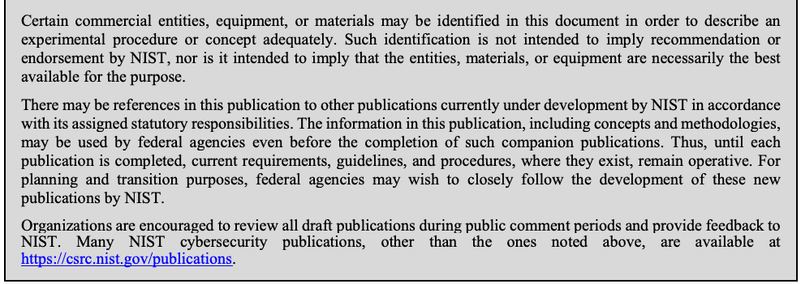
実験手順または概念を十分に説明するため、本書では特定の商業事業者、機器または材料に言及している場合がある。このような言及は、NISTによる推奨または承認を意味するものではなく、それらの事業者、材料または機器が目的に適した入手可能な最良のものであることを意味するものでもない。
There may be references in this publication to other publications currently under development by NIST in accordance with its assigned statutory responsibilities. The information in this publication, including concepts and methodologies, may be used by federal agencies even before the completion of such companion publications. Thus, until each publication is completed, current requirements, guidelines, and procedures, where they exist, remain operative. For planning and transition purposes, federal agencies may wish to closely follow the development of these new publications by NIST.
本刊行物には、NISTが割り当てられた法定責任に従って現在策定中の他の刊行物への言及が含まれる場合がある。本刊行物の情報（概念および方法論を含む）は、関連する刊行物が完成する前であっても、連邦機関が利用してもよい。したがって、各刊行物が完成するまでは、既存の要件、ガイドラインおよび手順がある場合、それらは引き続き有効である。計画および移行にあたり、連邦機関はNISTによる新たな刊行物の策定状況を注視してもよい。
Organizations are encouraged to review all draft publications during public comment periods and provide feedback to NIST. Many NIST cybersecurity publications, other than the ones noted above, are available at https://csrc.nist.gov/publications.
組織には、すべての草案をパブリックコメント期間中に確認し、NISTに意見を提出することを推奨する。上記以外の多くのNISTサイバーセキュリティ刊行物は、https://csrc.nist.gov/publications で入手できる。
Comments on this publication may be submitted to: National Institute of Standards and Technology Attn: Applied Cybersecurity Division, Information Technology Laboratory 100 Bureau Drive (Mail Stop 2000) Gaithersburg, MD 20899-2000 Email: LTEsecurity@nist.gov
本刊行物への意見は、次の宛先に提出できる。National Institute of Standards and Technology、宛先：Applied Cybersecurity Division, Information Technology Laboratory、100 Bureau Drive (Mail Stop 2000)、Gaithersburg, MD 20899-2000、電子メール：LTEsecurity@nist.gov
All comments are subject to release under the Freedom of Information Act (FOIA).
すべての意見は、情報公開法（FOIA）に基づき公開される場合がある。
Reports on Computer Systems Technology
コンピュータシステム技術に関する報告
The Information Technology Laboratory (ITL) at the National Institute of Standards and Technology (NIST) promotes the U.S. economy and public welfare by providing technical leadership for the Nation’s measurement and standards infrastructure. ITL develops tests, test methods, reference data, proof of concept implementations, and technical analyses to advance the development and productive use of information technology. ITL’s responsibilities include the development of management, administrative, technical, and physical standards and guidelines for the cost-effective security and privacy of other than national security-related information in federal information systems. The Special Publication 800-series reports on ITL’s research, guidelines, and outreach efforts in information system security, and its collaborative activities with industry, government, and academic organizations.
米国国立標準技術研究所（NIST）の情報技術研究所（ITL）は、米国の計測・標準基盤に関する技術的な指導を通じて、米国経済と公共の福祉を促進する。ITLは、情報技術の開発と生産的な利用を促進するため、試験、試験方法、参照データ、概念実証の実装、および技術分析を開発・実施する。ITLの責務には、連邦情報システム内の国家安全保障関連情報以外の情報について、費用対効果の高いセキュリティとプライバシーを確保するための、管理上、行政上、技術上および物理上の標準とガイドラインの策定が含まれる。Special Publication 800シリーズは、情報システムセキュリティに関するITLの研究、ガイドライン、普及活動、および産業界、政府、学術機関との協力活動を報告する。
Abstract
概要
Cellular technology plays an increasingly large role in society as it has become the primary portal to the internet for a large segment of the population. One of the main drivers making this change possible is the deployment of 4th generation (4G) Long Term Evolution (LTE) cellular technologies. This document serves as a guide to the fundamentals of how LTE networks operate and explores the LTE security architecture. This is followed by an analysis of the threats posed to LTE networks and supporting mitigations.
携帯電話通信技術は、人口の大きな割合を占める人々にとってインターネットへの主要な窓口となっており、社会における役割をますます拡大している。この変化を可能にしている主な要因の一つが、第4世代（4G）のLong Term Evolution（LTE）携帯電話通信技術の展開である。本書は、LTEネットワークの動作の基本を説明するガイドとして、LTEのセキュリティアーキテクチャを検討する。続いて、LTEネットワークに対する脅威と、それに対応する緩和策を分析する。
Keywords
キーワード
cellular security; networking; Long Term Evolution; 3rd Generation Partnership Project (3GPP); LTE; telecommunications; wireless.
携帯電話通信のセキュリティ；ネットワーク技術；Long Term Evolution；3rd Generation Partnership Project（3GPP）；LTE；電気通信；無線。
Acknowledgments
謝辞
The authors wish to thank all of the individuals who provided public comments, and their colleagues who reviewed drafts of this report and contributed to its technical content. This includes Tim Grance, Sheila Frankel, Sanjeev Sharma, Gema Howell, Michael Ogata, Nelson Hastings, Tracy McElvaney, and Murugiah Souppaya of NIST. The authors would like also recognize the technical contributions of the Canadian Telecom Cyber Protection (CTCP) Working Group. Finally, the authors would like to extend a special thanks to Alf Zugenmaier of the Munich University of Applied Sciences.
著者は、パブリックコメントを提供したすべての方々、および本報告書の草稿をレビューし、技術的内容に貢献した同僚に感謝する。これには、NISTのTim Grance、Sheila Frankel、Sanjeev Sharma、Gema Howell、Michael Ogata、Nelson Hastings、Tracy McElvaney、およびMurugiah Souppayaが含まれる。また、Canadian Telecom Cyber Protection（CTCP）Working Groupの技術的貢献にも謝意を表する。最後に、Munich University of Applied SciencesのAlf Zugenmaierに特に感謝する。
Audience
想定読者
This document introduces high-level LTE concepts and discusses technical LTE security mechanisms in detail. Technical readers are expected to understand fundamental networking concepts and general network security. It is intended to assist those evaluating, adopting, and operating LTE networks, specifically telecommunications engineers, system administrators, cybersecurity practitioners, and security researchers.
本書は、LTEの概念の概要を紹介し、LTEの技術的なセキュリティ機構を詳しく説明する。技術的な読者には、ネットワークの基本概念と一般的なネットワークセキュリティの理解を想定している。LTEネットワークの評価、導入、運用に携わる人々、具体的には電気通信技術者、システム管理者、サイバーセキュリティ実務者、およびセキュリティ研究者を支援することを目的とする。
Trademark Information
商標情報
All product names are registered trademarks or trademarks of their respective companies.
すべての製品名は、それぞれの企業の登録商標または商標である。
Table of Contents
目次
List of Appendices
付録一覧
Appendix A— Acronyms and Acronyms — 41
付録A— 略語 — 41
Appendix B— References — 44
付録B—参考文献 — 44ページ
List of Figures
図一覧
List of Tables
表一覧
1 Introduction
1 はじめに
Cellular technology has caused large changes throughout society in recent decades. Besides providing telephony services, cellular devices store and process personal information, provide enterprise connectivity, and act as the primary portal to the internet for many individuals. Phones, tablets, laptops, wearables, cellular modems in vehicles, and other industry specific equipment all have the ability to access cellular networks. The cellular infrastructure of the United States is transitioning from older 2nd Generation (2G) and 3rd Generation (3G) cellular technologies to newer 4th Generation (4G) technologies such as Long Term Evolution (LTE). LTE is now the dominant air interface technology across the United States and is seeing rapid adoption in countries across the globe.
近年、携帯電話技術は社会に大きな変化をもたらしてきた。携帯電話デバイスは通話サービスを提供するだけでなく、個人情報を保存・処理し、企業ネットワークへの接続を提供し、多くの人にとってインターネットへの主要な接続手段となっている。携帯電話ネットワークには、電話、タブレット、ノートPC、ウェアラブル端末、車載携帯電話モデム、その他の業界固有機器が接続できる。米国の携帯電話基盤は、第2世代（2G）および第3世代（3G）の旧来技術から、Long Term Evolution（LTE）などの第4世代（4G）技術へ移行している。LTEは現在、米国全域で主流の無線インターフェース技術であり、世界各国でも急速に普及している。
1.1 Purpose and Scope
1.1 目的と範囲
The purpose of this document is to provide information to organizations regarding the security capabilities of cellular networks based on LTE technology. LTE networks are rarely deployed in a standalone fashion and instead are integrated alongside the previous generations of cellular systems - however 3G and 2G networks are out of scope for the technology overview of this document. Because 2G and 3G networks are deployed alongside LTE networks, these older cellular systems are discussed within the threats and mitigations section of this document.
本書は、LTE技術に基づく携帯電話ネットワークのセキュリティ機能に関する情報を組織に提供することを目的とする。LTEネットワークは単独で導入されることはまれで、従来世代の携帯電話システムと併設・統合される。ただし、本書の技術概要では3Gおよび2Gネットワークを対象外とする。これらの旧世代システムはLTEネットワークと併設されるため、本書の脅威と対策の節では取り上げる。
The document is primarily scoped to analyzing the security of the systems traditionally owned and/or operated by a wireless provider, but also includes organizations writing firmware to operate the System on a Chip (SoC) inside of a mobile device that communicates with the cellular infrastructure. The wireless providers, also known as mobile network operators (MNOs), operate the cellular LTE air interface, backhaul, core network, and portions of a user’s mobile device, including the Universal Integrated Circuit Card (UICC) hardware token and the Universal Subscriber Identity Module (USIM) software application. All of these entities will be fully described within this document.
本書の主な対象は、従来、無線通信事業者が所有または運用してきたシステムのセキュリティ分析である。また、携帯電話基盤と通信するモバイルデバイス内のシステムオンチップ（SoC）を動作させるファームウェアを開発する組織も対象に含む。モバイルネットワーク事業者（MNO）とも呼ばれる無線通信事業者は、LTE無線インターフェース、バックホール、コアネットワークに加え、Universal Integrated Circuit Card（UICC）のハードウェアトークンやUniversal Subscriber Identity Module（USIM）のソフトウェアアプリケーションなど、ユーザーのモバイルデバイスの一部を運用する。これらの構成要素はすべて本書で詳しく説明する。
The mobile device hardware, mobile operating system (e.g., Android, Blackberry, iOS, Windows Phone), and 3rd party mobile applications are generally out of the scope of this document unless otherwise noted. This document does not analyze non 3rd Generation Partnership Project (3GPP) networks (e.g., WiFi, WiMAX, 3GPP2), forthcoming 3GPP features such as device to device cellular communications and cellular internet of things (IoT), and the over-the-air (OTA) management updates to cellular platforms, and the networks supporting services (e.g Domain Name Services (DNS), Network Time Protocol (NTP)). Supply chain issues relating to cellular networks are also not described. Finally, the IP Multimedia Subsystem (IMS), a modern platform for delivering services such as Voice over LTE (VoLTE), is not included within this document.
モバイルデバイスのハードウェア、モバイルOS（Android、BlackBerry、iOS、Windows Phoneなど）、およびサードパーティ製モバイルアプリケーションは、特に記載がない限り、本書の対象外である。本書では、Wi-Fi、WiMAX、3GPP2などの第3世代パートナーシップ・プロジェクト（3GPP）以外のネットワーク、デバイス間の携帯電話通信や携帯電話向けモノのインターネット（IoT）など今後の3GPP機能、携帯電話プラットフォームの無線経由（OTA）管理更新、ならびにドメインネームサービス（DNS）やネットワークタイムプロトコル（NTP）などのサービスを支えるネットワークは分析しない。携帯電話ネットワークに関するサプライチェーンの問題も扱わない。最後に、Voice over LTE（VoLTE）などのサービスを提供する最新プラットフォームであるIP Multimedia Subsystem（IMS）も本書の対象に含めない。
1.2 Document Structure
1.2 本書の構成
The remainder of this document is organized into the following major sections:
本書の残りの部分は、次の主要な節で構成する。
•Section 2 provides an overview of LTE standards and technology,
•第2節ではLTEの標準と技術の概要を示す。
•Section 3 details the security architecture of LTE,
•第3節ではLTEのセキュリティアーキテクチャを詳しく説明する。
•Section 4 identifies threats to LTE networks,
•第4節ではLTEネットワークに対する脅威を特定する。
•Section 5 recommends mitigations and other methods of enhancing LTE security, and
•第5節では、LTEセキュリティを強化するための対策およびその他の方法を推奨する。
•Section 6 contains conclusions and future research.
•第6節では結論と今後の研究課題を示す。
The document also contains appendices with supporting material:
本書には、参考資料として次の付録も含まれる。
•Appendix A defines selected acronyms and abbreviations used in this publication, and
•付録Aでは、本刊行物で使用する一部の略語および省略形を定義する。
•Appendix B contains a list of references used in the development of this document.
•付録Bには、本書の作成にあたって使用した参考文献を列挙する。
1.3 Document Conventions
1.3 本書の表記規則
This document primarily uses LTE/Evolved Packet System (EPS) terminology. Therefore, those already familiar with cellular concepts from non-LTE systems and terminology may need to consult the appendix containing Acronyms and Acronyms for clarification.
本書では主にLTE/Evolved Packet System（EPS）の用語を使用する。したがって、LTE以外のシステムの携帯電話に関する概念や用語に詳しい読者は、確認のため、略語と略語を収録した付録を参照する必要がある場合がある。
•The terms "cell" and "cellular" are used interchangeably.
•「セル」と「セルラー」は同じ意味で使用する。
•The term "base station" is used as a standards agnostic term of referring to a cellular tower communicating with a mobile device, and is often used when discussing the interaction between 2G, 3G, and 4G systems. Each set of standards uses a specific term for base station, and LTE employs the term evolved Node B, which is shortened to eNodeB or eNB. eNodeB is generally used in this document, but when standards are quoted or specific cryptographic keys referenced, the term eNB may be used.
•「基地局」は、モバイルデバイスと通信する携帯電話基地局を指す、規格に依存しない一般用語として使用する。また、2G、3G、4Gシステム間の相互作用を説明する場合にもよく用いる。各規格は基地局に固有の用語を使い、LTEでは「evolved Node B」を用いる。これはeNodeBまたはeNBと略される。本書では通常eNodeBを使うが、規格の引用時または特定の暗号鍵を参照する場合にはeNBを使うことがある。
•The term "mobile device" is used as a standards agnostic term of referring to the User Equipment (UE) (e.g., cellphone, tablet, cellular dongle).
•「モバイルデバイス」は、携帯電話、タブレット、携帯電話用ドングルなどのUser Equipment（UE）を指す、規格に依存しない一般用語として使用する。
•The LTE standards heavily use the term Evolved Packet System (EPS) which is used interchangeably with "LTE" within this document.
•LTE規格ではEvolved Packet System（EPS）という用語が頻繁に使われる。本書ではEPSを「LTE」と同じ意味で使用する。
•The LTE standards heavily use the term Evolved Packet Core (EPC), which is used interchangeably with the term “core.”
•LTE規格ではEvolved Packet Core（EPC）という用語が頻繁に使われる。本書ではEPCを「コア」と同じ意味で使用する。
2 Overview of LTE Technology
2 LTE技術の概要
A cellular network is a wireless network with a distributed coverage area made up of cellular sites housing radio equipment. A cellular site is often owned and operated by a wireless telecommunications company, internet service provider, or possibly government entity. The wireless telecommunications company, or mobile network operator (MNO), providing service to end users may own the cellular site, or pay for access to the cellular infrastructure - as is the case with mobile virtual network operators (MVNO). MNOs distribute cellular radio equipment throughout a large geographic region, and connect them back to a backend core network they typically own and operate. In areas receiving poor cellular service, such as inside a building, MNOs may provide a signal booster or small-scale base station directly to the end user to operate.
携帯電話ネットワークは、無線機器を設置した携帯電話基地局を配置して広域をカバーする無線ネットワークである。基地局は、無線通信事業者、インターネットサービスプロバイダー、場合によっては政府機関がしばしば所有・運用する。エンドユーザーにサービスを提供する無線通信事業者（モバイルネットワーク事業者、MNO）は、携帯電話基地局を所有する場合もあれば、モバイル仮想ネットワーク事業者（MVNO）のように携帯電話基盤へのアクセス料を支払う場合もある。MNOは広い地域に携帯電話無線機器を配置し、通常は自ら所有・運用するバックエンドのコアネットワークに接続する。建物内など携帯電話の電波が弱い場所では、MNOがエンドユーザーに信号ブースターや小規模基地局を提供し、ユーザー自身に運用させることもある。
Before LTE, cellular systems were modeled after the traditional wireline telephony system in that a dedicated circuit was provided to a user making a telephone call, ensuring a minimal guarantee of service. In comparison to circuit switched cellular networks of the past, LTE networks utilize packet switching. An LTE network provides consistent Internet Protocol (IP) connectivity between an end user's mobile device and IP services on the data network, while maintaining connectivity when moving from tower to tower (e.g., mobility).
LTE以前の携帯電話システムは、従来の有線電話システムにならい、通話を行うユーザーに専用回線を割り当て、最低限のサービス品質を保証していた。これまでの回線交換方式の携帯電話ネットワークと比べ、LTEネットワークはパケット交換を利用する。LTEネットワークは、エンドユーザーのモバイルデバイスとデータネットワーク上のIPサービスの間に安定したインターネットプロトコル（IP）接続を提供し、基地局間を移動する間も接続を維持する（モビリティ）。
LTE is a mobile broadband communication standard defined by the 3rd Generation Partnership Project (3GPP), a worldwide standards development organization. Implementations of LTE networks are being deployed across the globe and installations continue to increase as the demand for high-speed mobile networks is constantly rising. Within Technical Specification (TS) 22.278 [9], 3GPP defines a number of high-level goals for LTE systems to meet, including:
LTEは、世界規模で標準策定を行う第3世代パートナーシップ・プロジェクト（3GPP）が定めたモバイルブロードバンド通信規格である。高速モバイルネットワークへの需要が絶えず高まる中、LTEネットワークの導入は世界各地で進み、設置数も増加し続けている。3GPPは技術仕様書（TS）22.278 [9]で、LTEシステムが達成すべき複数の高水準目標を定めている。これには次が含まれる。
•Provide increased data speeds with decreased latency,
•遅延を減らしながらデータ通信速度を向上させる。
•Build upon the security foundations of previous cellular systems,
•従来の携帯電話システムのセキュリティ基盤を発展させる。
•Support interoperability between current and next generation cellular systems and other data networks,
•現行および次世代の携帯電話システムと、他のデータネットワークとの相互運用性を支援する。
•Improve system performance while maintaining current quality of service, and
•現在のサービス品質を維持しながら、システム性能を向上させる。
•Maintain interoperability with legacy systems.
•旧式システムとの相互運用性を維持する。
The following sections explain the fundamental concepts of LTE technology and architecture, network protocols, and the evolution of the 3GPP security.
次の節では、LTE技術とアーキテクチャの基本概念、ネットワークプロトコル、および3GPPセキュリティの変遷を説明する。
2.1 Evolution of 3GPP Standards
2.1 3GPP標準の変遷
Global System for Mobile Communications (GSM) is a 2G circuit switched cellular technology. Although GSM was not initially defined by 3GPP, 3GPP took control of the standard to maintain, enhance, and use it as a foundation to make future developments. 3GPP's first extension of GSM was the General Packet Radio Service (GPRS), referred to as a 2.5G technology. GPRS was the first method of sending non-voice data over a cellular network, and was quickly followed by the Enhanced Data Rates for GSM Evolution (EDGE), sometimes referred to as a 2.75G technology.
Global System for Mobile Communications（GSM）は、第2世代（2G）の回線交換方式の携帯電話技術である。GSMは当初3GPPによって定義されたものではないが、その後3GPPが標準の維持・強化を担い、将来の発展の基盤として利用した。3GPPが最初にGSMを拡張したのがGeneral Packet Radio Service（GPRS）であり、2.5G技術と呼ばれる。GPRSは携帯電話ネットワーク上で音声以外のデータを送信する最初の方式で、その後まもなくEnhanced Data Rates for GSM Evolution（EDGE）が導入された。EDGEは2.75G技術と呼ばれることもある。
The first voice standard defined by 3GPP was the Universal Mobile Telecommunications System (UMTS), which is a 3G circuit switched technology. Soon after the development of UMTS, 3GPP packet switched technologies were evolved into multiple variants collectively referred to as High Speed Packet Access (HSPA), which is arguably considered 3.5G, although certain mobile devices will display an HSPA connection as 4G. HSPA was created to increase data throughput on both the downlink and uplink connections.
3GPPが定義した最初の音声規格はUniversal Mobile Telecommunications System（UMTS）であり、第3世代（3G）の回線交換方式技術である。UMTSの開発後まもなく、3GPPのパケット交換方式技術は複数の種類へ発展し、総称してHigh Speed Packet Access（HSPA）と呼ばれるようになった。HSPAは3.5Gと見なしうるが、一部のモバイルデバイスではHSPA接続が4Gと表示される。HSPAは、下り回線と上り回線の両方でデータスループットを高めるために作られた。
LTE needs to support a growing demand for higher data rates and quality of service. It also needs to be able to quickly support new advances in technology, and LTE’s packet switched foundation will make it easier to upgrade/update the technology as well as lower the complexity of the overall network. To meet these goals, LTE was introduced via 3GPP Release 8, which was frozen on December 11, 2008. All subsequent releases of LTE have built upon this baseline. 3GPP defines a series of specifications dedicated to the technological requirements for LTE, known as the 36 series. 3GPP also defines a series of specifications for security, known as the 33 series. Each 3GPP series is comprised of Technical Report (TR) and Technical Specification (TS) documents. Newly requested LTE features are explored via TRs in which possible solutions are propossed and evaluated. Once a single solution for the feature is agreed upon, it is standardized within a TS. This document is based on 3GPP Release 12, which was frozen on March 13, 2015 [1].
LTEは、より高いデータ速度とサービス品質への需要の拡大に対応する必要がある。また、新たな技術の進歩を迅速に取り込む必要もある。LTEはパケット交換を基盤とするため、技術のアップグレードや更新が容易になり、ネットワーク全体の複雑さも軽減される。これらの目標を達成するため、LTEは2008年12月11日に凍結された3GPPリリース8で導入された。その後のLTEリリースはすべてこの基盤を発展させている。3GPPは、LTEの技術要件に関する36シリーズの仕様書と、セキュリティに関する33シリーズの仕様書を定めている。各シリーズには技術報告書（TR）と技術仕様書（TS）がある。新たに要望されたLTE機能はTRで検討され、そこで解決案を提案・評価する。機能について単一の解決案に合意すると、それをTSに標準化する。本書は2015年3月13日に凍結された3GPPリリース12に基づく[1]。
2.2 LTE Concepts
2.2 LTEの概念
The following section describes important high level concepts and components of LTE networks that are used and discussed throughout the course of this document. One of the fundamental concepts to understand is the overall network architecture: mobile devices (UEs) connect to base stations that make up the E-UTRAN via radio signals, and the base stations transmit and receive IP packets to and from the core network. The core ntework has a large number of entry and exit points, including the internet and connections to other cellular networks. Figure 1 illustrates these high-level concepts.
次の節では、本書全体で用いるLTEネットワークの重要な上位概念と構成要素を説明する。理解すべき基本事項の一つは、ネットワーク全体のアーキテクチャである。モバイルデバイス（UE）は無線信号を介してE-UTRANを構成する基地局に接続し、基地局はコアネットワークとの間でIPパケットを送受信する。コアネットワークには、インターネットや他の携帯電話ネットワークとの接続を含む、多数の入出力点がある。図1はこれらの上位概念を示す。
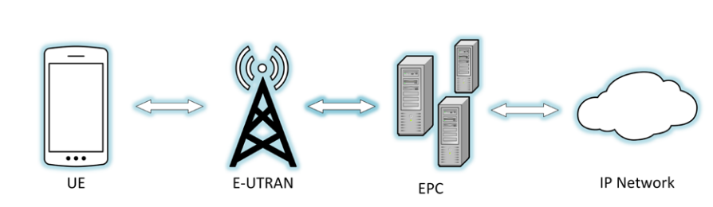
図1—携帯電話ネットワークの概要。左から右へ 4 つの要素が並び、隣どうしが両方向の矢印で結ばれている。UE と記された携帯電話、E-UTRAN と記された電波塔、EPC と記されたサーバー群、IP Network と記された雲である。
Figure 1 - High-level Cellular Network
図1—携帯電話ネットワークの概要
In contrast to earlier cellular network technologies that use a hybrid of circuit-switched technology for voice and packet-switched technology for data, LTE solely uses packet switched, IP-based technology. In the LTE architecture, voice traffic traverses the network over the data connection using protocols, such as VoLTE, which is similar to Voice Over IP (VoIP). VoLTE is being deployed with widespread adoption by MNOs in the US. MNOs still utilize legacy circuit switched cellular networks to handle voice calls and short message service (SMS) messages by using a mechanism known as circuit switched fallback (CSFB).
音声に回線交換方式、データにパケット交換方式を併用する従来の携帯電話ネットワークとは異なり、LTEはパケット交換方式のIPベース技術のみを使用する。LTEアーキテクチャでは、VoLTEなどのプロトコルを使い、データ接続を通じて音声トラフィックをネットワーク上に伝送する。VoLTEはVoice over IP（VoIP）と類似する。米国ではMNOによるVoLTEの導入が広く進んでいる。一方、MNOは回線交換方式の旧式携帯電話ネットワークも引き続き利用し、回線交換フォールバック（CSFB）と呼ばれる仕組みにより音声通話やショートメッセージサービス（SMS）を扱う。
2.2.1 Mobile Devices
2.2.1 モバイルデバイス
Mobile devices are the primary endpoint in cellular networks, interacting with base stations via radio signals to send and receive information. A mobile device is composed of two distinct systems: the general purpose mobile OS (e.g., Android, iOS, Windows Phone) that users interact with and the telephony subsystem used to access the cellular network. The telephony subsystem contains a distinct application processor referred to as the baseband processor, which has its own operating system used to interact with the cellular network, often developed by the cellular SoC manufacturer.
モバイルデバイスは携帯電話ネットワークの主要なエンドポイントであり、無線信号を介して基地局と情報を送受信する。モバイルデバイスは、ユーザーが操作する汎用モバイルOS（Android、iOS、Windows Phoneなど）と、携帯電話ネットワークへのアクセスに使う電話機能サブシステムという、2つの異なるシステムで構成される。電話機能サブシステムには、ベースバンドプロセッサと呼ばれる独立したアプリケーションプロセッサが含まれる。これは独自のOSを備え、携帯電話ネットワークとの通信に用いられる。OSは多くの場合、携帯電話用SoCの製造元が開発する。
LTE standards refer to a mobile device as the UE, which refers to both the terminal with the mobile operating system, baseband processor, and LTE radio, and the removable hardware token housing security-critical information used to obtain network access. This removable hardware token is colloquially referred to as the SIM card, but LTE standards use the term Universal Integrated Circuit Card (UICC). The UICC, which is essentially a smartcard, runs a Java application known as the Universal Subscriber Identity Module (USIM). The USIM interfaces with the cellular radio and subsequently the mobile network. The UICC contains secret cryptographic keys that are shared with the MNO before it is provisioned to a user.
LTE規格では、モバイルデバイスをUEと呼ぶ。UEには、モバイルOS、ベースバンドプロセッサ、LTE無線機を備えた端末と、ネットワークアクセスに必要なセキュリティ上重要な情報を格納する着脱式ハードウェアトークンの両方が含まれる。このトークンは一般にSIMカードと呼ばれるが、LTE規格ではUniversal Integrated Circuit Card（UICC）という用語を使う。スマートカードに相当するUICC上では、Universal Subscriber Identity Module（USIM）と呼ばれるJavaアプリケーションが動作する。USIMは携帯電話無線機と連携し、その後モバイルネットワークと通信する。UICCには秘密の暗号鍵が格納され、ユーザーに支給する前にMNOと共有される。
There are two distinct identifiers used in cellular networks: The International Mobile Subscriber Identity (IMSI) and the International Mobile Equipment Identifier (IMEI). The IMSI is the long-term identity that the carrier uses to identify a subscriber. The IMEI is used to identify a specific mobile device to the network and is stored on a mobile device’s internal flash memory, although the IMEI may also be stored on the UICC.
携帯電話ネットワークでは、International Mobile Subscriber Identity（IMSI）とInternational Mobile Equipment Identifier（IMEI）という2種類の識別子を使う。IMSIは通信事業者が加入者を識別するために使う長期的な識別子である。IMEIは特定のモバイルデバイスをネットワークに対して識別するために使われ、デバイス内蔵のフラッシュメモリに保存されるが、UICCに保存される場合もある。
The following is a consolidated list of the components included within the UE:
UEを構成する要素を以下にまとめる。
•User equipment (UE): Cellular device (cell phone, tablet, LTE modem, etc) includes the following: Mobile Equipment (ME): The mobile terminal without the hardware token. o UICC: A smart card that stores personal information, cryptographic keys, and is o responsible for running java applications that enable network access. This smart card is inserted into the ME. International Mobile Equipment Identifier (IMEI): Terminal identity used to o identify the mobile device to the cellular network. International Mobile Subscriber Identity (IMSI): User identity used to identify o a subscriber to the cellular network.
•User Equipment（UE）：携帯電話、タブレット、LTEモデムなどの携帯電話デバイス。構成要素は次のとおり。Mobile Equipment（ME）：ハードウェアトークンを除くモバイル端末。UICC：個人情報と暗号鍵を格納し、ネットワークアクセスを可能にするJavaアプリケーションを実行するスマートカード。MEに挿入する。International Mobile Equipment Identifier（IMEI）：モバイルデバイスを携帯電話ネットワーク上で識別する端末識別子。International Mobile Subscriber Identity（IMSI）：携帯電話ネットワーク上で加入者を識別するユーザー識別子。
In addition to the IMEI and IMSI, MNO’s may utilize other LTE identities, including the Globally Unique Temporary Identity (GUTI) and the Temporary Mobile Subscriber Identity (TMSI). The GUTI can identify a UE to a network without having to send the long-term identity (i.e., IMSI). The security implications of clear-text transmission of the IMSI will be discussed in later sections. Different identities are used for various reasons, including limiting the exposure of a permanent identity, to minimize tracking of a device as it accesses multiple services on the network.
IMEIおよびIMSIに加え、MNOはGlobally Unique Temporary Identity（GUTI）やTemporary Mobile Subscriber Identity（TMSI）などのLTE識別子も使用する場合がある。GUTIを使えば、長期識別子（IMSI）を送信せずにUEをネットワークに識別させられる。IMSIを平文で送信することのセキュリティ上の影響は、後の節で説明する。識別子は、恒久的な識別情報の露出を抑え、ネットワーク上の複数のサービスを利用するデバイスの追跡を減らすなど、さまざまな理由で使い分けられる。
2.2.2 E-UTRAN
2.2.2 E-UTRAN
The Radio Access Network (RAN) has evolved over time into the Evolved Universal Terrestrial Radio Access Network (E-UTRAN). UEs connect to the E-UTRAN to send data to the core network. The E-UTRAN is a mesh network composed of base stations. A base station, or Evolved Node B, modulates and demodulates radio signals to communicate with UEs. eNodeBs then act as a relay point to create and send IP packets to and from the core network. Cellular networks are designed to pass connectivity from one radio access device in the E-UTRAN to the next as the connected UE changes location. This seamless handoff ability allows devices to have a constant connection with minimal interruptions providing what is know as ‘mobility’ within cellular networks. eNodeBs use the X2 interface to communicate with each other, primarily transmitting control signaling to allow for LTE network communication enabling UE mobility. During this handover the serving eNodeB must transfer all UE context1, cellular paramaters and other information about the UE, to the receiving eNodeB.
無線アクセスネットワーク（RAN）は、時とともに発展してEvolved Universal Terrestrial Radio Access Network（E-UTRAN）となった。UEはE-UTRANに接続してコアネットワークへデータを送る。E-UTRANは基地局で構成されるメッシュネットワークである。基地局、すなわちEvolved Node Bは、無線信号を変調・復調してUEと通信する。eNodeBは中継点として動作し、コアネットワークとの間でIPパケットを生成・送信する。携帯電話ネットワークでは、接続中のUEが移動すると、E-UTRAN内で接続先をある無線アクセス機器から次の機器へ引き継ぐ。このシームレスなハンドオフにより、最小限の中断で常時接続が可能となり、携帯電話ネットワークにおける「モビリティ」が実現する。eNodeBはX2インターフェースで相互に通信し、主に制御信号を伝送してLTEネットワーク通信を可能にし、UEのモビリティを支える。ハンドオーバー時、接続元のeNodeBはUEコンテキスト1、携帯電話関連パラメータ、その他のUE情報を接続先のeNodeBに転送する必要がある。
LTE uses a concept of named interfaces to easily identify the communication link between two endpoints. A named interface in LTE terminology, such as the X2 interface, refers to the logical link between two endpoints, and in this example two eNodeBs. Named interfaces in LTE are responsible for sending and receiving specified messages and data. These can be physically implemented in a variety of ways and multiple named interfaces can share the same physical connection. This physical connection can be a variety of network technologies such as fiber, Ethernet, microwave, satellite link, etc.
LTEでは、2つのエンドポイント間の通信リンクを容易に特定できるよう、名前付きインターフェースという概念を使う。X2インターフェースなどLTE用語における名前付きインターフェースは、2つのエンドポイント（この例では2台のeNodeB）間の論理リンクを指す。LTEの名前付きインターフェースは、指定されたメッセージやデータの送受信を担う。物理的な実装方法はさまざまであり、複数の名前付きインターフェースが同じ物理接続を共有することもある。物理接続には、光ファイバー、イーサネット、マイクロ波、衛星リンクなど、さまざまなネットワーク技術を利用できる。
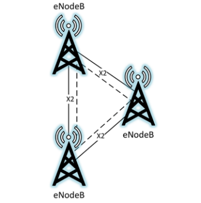
図2—E-UTRAN。eNodeB と記された 3 基の電波塔が三角形に配置されている（左に 2 基、右に 1 基）。各 2 基の間は実線と破線で結ばれ、それぞれの接続に X2 と記されている。
Figure 2 - E-UTRAN
図2—E-UTRAN
Base stations come in a variety of form factors, different than a typical base station comprised of a physical cell tower and radio equipment. Small cells have a smaller form factor, transmit at lower power levels, capable of extending network coverage, and ultimately increase the capacity of the network.
基地局にはさまざまな形態があり、物理的な電波塔と無線機器で構成される一般的な基地局とは異なるものもある。スモールセルは小型で、低出力で送信し、ネットワークのカバー範囲を拡張するとともに、最終的にはネットワーク容量を増加させる。
The following list consolidates this information:
以下にこれらの情報をまとめる。
•Evolved Universal Terrestrial Radio Access Network (E-UTRAN): All of the components providing wireless mobility.
•Evolved Universal Terrestrial Radio Access Network（E-UTRAN）：無線によるモビリティを提供する構成要素の全体。
•Evolved Node B (eNodeB or eNB): An evolved Node B, colloquially referred to as a base station.
•Evolved Node B（eNodeBまたはeNB）：進化したNode Bであり、俗に基地局と呼ばれる。
•Small Cell: Low powered base station with less range and less capacity than a typical eNodeB, for instance Home eNodeBs (HeNB), Donor eNodeBs (DeNB), and Relay Nodes (RN).
•スモールセル：一般的なeNodeBよりも到達範囲と容量が小さい低出力の基地局。例として、Home eNodeB（HeNB）、Donor eNodeB（DeNB）、Relay Node（RN）がある。
2.2.3 Evolved Packet Core
2.2.3 発展型パケットコア
The evolved packet core (EPC), illustrated in Figure 3, is the routing and computing brain of the LTE network. UEs receive control signals through base stations originating from the Mobility Management Entity (MME). The MME performs a large number of functions including managing and storing UE contexts, creating temporary identifiers, paging, controlling authentication functions, and selecting the Serving Gateway (S-GW) and Packet Data Network (PDN) Gateway (P-GW), respectively. No user traffic is sent through the MME. The S-GW anchors the UEs for intra-eNodeB handoffs and routes information between the P-GW and the E-UTRAN. The P-GW is the default router for the UE, making transfers between 3GPP and non-3GPP services, allocating IP addresses to UEs, and providing access to the PDN.
図3に示すEvolved Packet Core（EPC）は、LTEネットワークのルーティングと計算を担う頭脳である。UEは、Mobility Management Entity（MME）から発せられる制御信号を基地局経由で受信する。MMEは、UEコンテキストの管理と保存、一時識別子の作成、ページング、認証機能の制御、Serving Gateway（S-GW）とPacket Data Network（PDN）Gateway（P-GW）の選択など、多数の機能を実行する。ユーザトラフィックはMMEを経由しない。S-GWは、eNodeB内ハンドオフにおけるUEのアンカーとなり、P-GWとE-UTRANの間で情報をルーティングする。P-GWはUEのデフォルトルータであり、3GPPサービスと非3GPPサービスの間の転送を行い、UEにIPアドレスを割り当て、PDNへのアクセスを提供する。
The following list consolidates and defines the components included within the EPC:
以下にEPCの構成要素をまとめ、定義する。
•Evolved Packet Core (EPC): Routing and computing brain of the LTE network.
•Evolved Packet Core（EPC）：LTEネットワークのルーティングと計算を担う頭脳。
•Mobility Management Entity (MME): Primary network signaling node that does not interact with user traffic. Large variation in functionality including managing/storing UE contexts, creating temporary IDs, sending pages, controlling authentication functions, and selecting the S-GW and P-GWs.
•Mobility Management Entity（MME）：ユーザトラフィックを扱わない主要なネットワークシグナリングノード。UEコンテキストの管理・保存、一時IDの作成、ページの送信、認証機能の制御、S-GWとP-GWの選択など、機能は多岐にわたる。
•Serving Gateway (S-GW): Carries user data, anchors UEs for intra-eNodeB handoffs, and routes information between the P-GW and the E-UTRAN.
•Serving Gateway（S-GW）：ユーザデータを伝送し、eNodeB内ハンドオフにおけるUEのアンカーとなり、P-GWとE-UTRANの間で情報をルーティングする。
•Packet Data Network Gateway (P-GW): Allocates IP addresses, routes packets, and interconnects with non-3GPP networks.
•Packet Data Network Gateway（P-GW）：IPアドレスの割り当て、パケットのルーティング、非3GPPネットワークとの相互接続を行う。
•Home Subscriber Server (HSS): Master database with subscriber data and stores the secret key K.
•Home Subscriber Server（HSS）：加入者データを保持するマスターデータベースであり、秘密鍵Kを格納する。
•Authentication Center (AuC): Resides within the HSS, maps long term identities to pre-shared cryptographic keys, performs cryptographic calculations during authentication.
•Authentication Center（AuC）：HSS内に置かれ、長期識別子を事前共有暗号鍵に対応付け、認証時に暗号計算を行う。
•Policy and Charging Rules Function (PCRF): Rules and policies related to quality of service (QoS), charging, and access to network resources are distributed to the P-GW and enforced by the PCRF.
•Policy and Charging Rules Function（PCRF）：サービス品質（QoS）、課金、ネットワーク資源へのアクセスに関するルールとポリシーがP-GWに配布され、PCRFによって施行される。
•IP Multimedia Subsystem (IMS): Gateways to the public switched telephone network (PSTN), multimedia services (e.g., VoLTE, instant messaging, video), and paging for multimedia services.
•IP Multimedia Subsystem（IMS）：公衆交換電話網（PSTN）へのゲートウェイ、マルチメディアサービス（例：VoLTE、インスタントメッセージング、ビデオ）、およびマルチメディアサービスのページングを提供する。
•Backhaul: Connection between radio network and the core network. This connection can be fiber, satellite link, Ethernet cable, Microwave, etc.
•バックホール：無線ネットワークとコアネットワークの間の接続。この接続には、光ファイバ、衛星回線、イーサネットケーブル、マイクロ波などがある。
•Packet Data Network (PDN): Any external IP network (e.g., internet). UEs can be connected to one or many PDNs at any point in time.
•Packet Data Network（PDN）：任意の外部IPネットワーク（例：インターネット）。UEは任意の時点で一つまたは複数のPDNに接続できる。
•Access Point Name (APN): Serves as the identifier for a PDN, and is the gateway between the EPC and PDN. The APN must be specified by the UE for each PDN it connects to.
•Access Point Name（APN）：PDNの識別子として機能し、EPCとPDNの間のゲートウェイとなる。UEは、接続する各PDNについてAPNを指定しなければならない。
Figure 3 depicts the components introduced above and shows the data flows between these network components. This graphic can serve as reference to visualize the interconnected fundamental LTE network components and may depict concepts not yet discussed. The solid lines in the diagram depict user traffic, while the dashed lines depict control signaling traffic.
図3は、前述の構成要素とネットワーク構成要素間のデータフローを示す。この図はLTEネットワークの基本構成要素間の相互接続を理解する際の参考となり、まだ説明していない概念も含む場合がある。図中の実線はユーザートラフィックを、破線は制御信号トラフィックを示す。
![Figure 3 - LTE Network Architecture. On the left, a phone labeled UE connects to an eNodeB by a solid line and a dashed line labeled LTE-Uu. A rounded box labeled E-UTRAN contains three towers labeled eNodeB in a triangle, interconnected by solid and dashed lines labeled X2. A second rounded box labeled EPC contains HSS, MME, PCRF, S-GW and P-GW. From the right-hand eNodeB, a dashed line labeled S1-MME goes to MME and a solid line labeled S1-U goes to S-GW. Inside the EPC, dashed lines connect HSS and MME (S6a), MME and S-GW (S11), and PCRF and P-GW (GX); a solid line connects S-GW and P-GW (S5/S8). A solid line labeled SGi connects P-GW to a cloud labeled IP Network outside the EPC box.](assets/187/p0015-figure-01.png)
図3 - LTEネットワークアーキテクチャ。左端の UE と記された携帯電話は、LTE-Uu と記された実線と破線で eNodeB に接続する。E-UTRAN と記された角丸の枠には eNodeB と記された 3 基の電波塔が三角形に配置され、X2 と記された実線と破線で相互に結ばれている。EPC と記されたもう 1 つの角丸の枠には HSS、MME、PCRF、S-GW、P-GW がある。右側の eNodeB から、S1-MME と記された破線が MME へ、S1-U と記された実線が S-GW へ延びる。EPC の中では、HSS と MME（S6a）、MME と S-GW（S11）、PCRF と P-GW（GX）が破線で、S-GW と P-GW（S5/S8）が実線で結ばれている。P-GW は SGi と記された実線で、EPC の枠の外にある IP Network と記された雲に接続する。
Figure 3 - LTE Network Architecture
図3 - LTEネットワークアーキテクチャ
2.2.4 LTE Network Topologies
2.2.4 LTEネットワークのトポロジ
An LTE network minimally consists of a UE, a group of eNodeBs and other radio access equipment making up the E-UTRAN and the backend core network controlled by the MNO. The E-UTRAN is connected to the EPC via a network link known as the backhaul. From a security perspective it is important to note the E-UTRAN and EPC are most likely in completely different geographic locations. Thus, the interfaces that link them may or may not be contained totally within the MNO’s private domain. This section will explore various operational network topologies such as fixed and deployable LTE networks.
LTEネットワークは、最小構成では、UE、E-UTRANを構成する一群のeNodeBやその他の無線アクセス機器、およびMNOが制御するバックエンドのコアネットワークから成る。E-UTRANはバックホールと呼ばれるネットワークリンクを介してEPCに接続する。セキュリティの観点から重要なのは、E-UTRANとEPCは地理的にまったく異なる場所に配置される可能性が高い点である。そのため、両者をつなぐインターフェースがMNOのプライベートドメイン内に完全に収まるとは限らない。本節では、固定LTEネットワークや展開型LTEネットワークなど、さまざまな運用トポロジを取り上げる。
A fixed LTE network is a typical implementation of a cellular network utilizing multiple cell sites to provide coverage to a large geographic area. In this type of architecture, the core network components are generally in separate locations. The cell sites that house the eNodeBs connect to the EPC through the backhaul. The backhaul connection can be provided by a multitude of technologies (e.g., microwave, satellite, fiber, etc). An MNO would typically deploy this type of network architecture. Although LTE networks require the same functional components in order to operate effectively, the quantity and placement of these components is completely dependent on the MNO’s network design. It is possible the network operator incorporates multiple EPC components that serve critical functions as well as load balances these components to provide increased availability.
固定LTEネットワークは、広い地域をカバーするために複数のセルサイトを利用する、一般的な携帯電話ネットワークの実装形態である。このアーキテクチャでは通常、コアネットワークの構成要素は離れた場所に設置される。eNodeBを設置したセルサイトは、バックホールを介してEPCに接続する。バックホールには、マイクロ波、衛星、光ファイバーなど多様な技術を利用できる。MNOは一般にこの種のネットワークアーキテクチャを導入する。LTEネットワークが効果的に動作するには同じ機能要素が必要だが、それらの数や配置はMNOのネットワーク設計によって決まる。重要な機能を担うEPC構成要素を複数配置し、負荷分散することで可用性を高めることもできる。
An example of a fixed LTE network is a large region being provided network coverage with the use of many spread out cell sites housing eNodeBs all connecting back into one or multiple EPCs. Multiple eNodeBs are interconnected through the X2 interface, which is responsible for session handover from one eNodeB to the next as the UE travels. Ultimately the components of the E-UTRAN are interconnected and communicate to the EPCs through the backhaul or S1 interface. There may be many to many relationships between the E-UTRANs and the EPCs to provide high availability and reliability.
固定LTEネットワークの例として、広い地域に多数のセルサイトを設置し、各サイトのeNodeBを1つまたは複数のEPCに接続してネットワークをカバーする形態がある。複数のeNodeBはX2インターフェースで相互接続され、UEの移動に伴うeNodeB間のセッション引き継ぎを担う。最終的にE-UTRANの構成要素は相互接続され、バックホールまたはS1インターフェースを介してEPCと通信する。高可用性と信頼性を確保するため、複数のE-UTRANと複数のEPCが多対多で接続される場合がある。
In contrast to a fixed LTE network, a deployable LTE network is a compact network able to be deployed in areas where no LTE coverage exists, or where coverage has been interrupted. The deployable network can be mobile and packaged in different form factors (e.g., mounted on a vehicle, trailer, backpack). These types of LTE architectures can be used to create a self-contained network or be connected to an existing LTE, or other, network. The hardware used in a deployable network is generally more compact and capable of handling only a fraction of the throughput and capacity of a fixed LTE network.
固定LTEネットワークとは対照的に、展開型LTEネットワークは、LTEのカバー範囲がない場所やサービスが中断した場所に展開できる小規模なネットワークである。車両、トレーラー、バックパックへの搭載など、さまざまな形態でパッケージ化でき、移動させることもできる。この種のLTEアーキテクチャは、独立したネットワークを構築する場合にも、既存のLTEその他のネットワークに接続する場合にも使える。展開型ネットワークの機器は一般に小型で、固定LTEネットワークのスループットと容量の一部しか処理できない。
A Cell on Wheels, or COW, is an example of a commercially available deployable LTE network. These COWs are environments that include all elements of an LTE network and are mounted on trailers or in some cases packaged onto vehicles. COWs often still need to be connected back to the core network. These types of deployables can be used to provide additional capacity to an existing network where there is an increased demand, for example a large sporting event. These can also be used where network coverage is not available, such as a natural disaster site, in order to provide first responders a means of communication. These deployable networks are commercially available and can be purchased from network equipment providers.
Cell on Wheels（COW）は、市販されている展開型LTEネットワークの一例である。COWはLTEネットワークの全要素を含む設備で、トレーラーに搭載されるか、場合によっては車両に収納される。多くの場合、COWもコアネットワークに接続する必要がある。大規模なスポーツイベントのように需要が増加した場所で既存ネットワークの容量を補強する用途に使える。また、自然災害の被災地などネットワークのカバー範囲がない場所で、初動対応者に通信手段を提供するためにも使える。これらの展開型ネットワークは市販されており、ネットワーク機器プロバイダーから購入できる。
2.3 LTE Network Protocols
2.3 LTEネットワークプロトコル
The following protocols are used for communication over the air interface (the radio link between the UE and the eNodeB). This protocol suite is referred to as the air interface protocol stack, which is generally divided into three layers. Logically, these protocols set the foundation for all TCP/IP traffic operating above it. These protocols are:
次のプロトコルは、UEとeNodeB間の無線リンクである無線インターフェース上の通信に使われる。このプロトコル群を無線インターフェース・プロトコルスタックと呼び、一般に3つの層に分けられる。論理的には、これらのプロトコルが上位で動作するすべてのTCP/IPトラフィックの基盤となる。構成要素は次のとおりである。
•Radio Resource Control (RRC) operating at layer 3;
•Radio Resource Control（RRC）は第3層で動作する。
•Packet Data Convergence Protocol (PDCP) operating at layer 2;
•Packet Data Convergence Protocol（PDCP）は第2層で動作する。
•Radio Link Control (RLC) operating at layer 2;
•Radio Link Control（RLC）は第2層で動作する。
•Medium Access Control (MAC) operating at layer 2; and
•Medium Access Control（MAC）は第2層で動作する。
•Physical Access (PHY) operating at layer 1.
•Physical Access（PHY）は第1層で動作する。
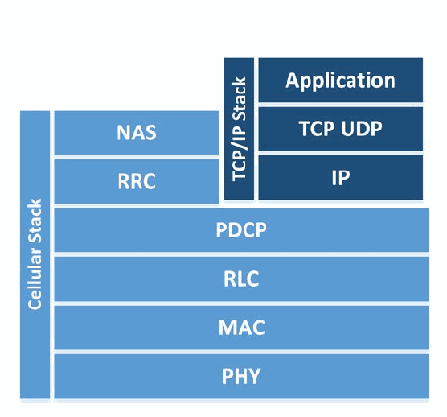
図4—LTEプロトコルスタック。2 つの層の積み重ねである。Cellular Stack と記された縦の帯は、上から NAS、RRC、PDCP、RLC、MAC、PHY にわたる。TCP/IP Stack と記されたもう 1 つの縦の帯は Application、TCP UDP、IP にわたり、これらは NAS と RRC の右に並び、PDCP の上に載っている。
Figure 4 - LTE Protocol Stack
図4—LTEプロトコルスタック
Each protocol within the air interface cellular stack performs a series of functions and operates on one of two logical planes: the user plane or the control plane. The user plane is the logical plane responsible for carrying user data being sent over the network (e.g., voice communication, SMS, application traffic) while the control plane is responsible for carrying all of the signaling communication needed for the UE to be connected. To make the technology evolution paths somewhat independent, the 3GPP specifications partition the cellular protocols into two strata; the Non-Access Stratum (NAS) and the Access Stratum (AS). The AS is all communication between the UE and eNodeB occurring via the Radio Frequency (RF) channel. The NAS consists of all non-radio signaling traffic between UE and MME. All of a user's TCP/IP and other application traffic are transmitted via the user plane. The control plane, which is required to setup, maintain, and terminate the air interface connection between the UE and the MME, hosts the RRC protocol. The PDCP, RLC, MAC, and PHY layers form the foundation of the air interface and are part of both user and control planes. The aforementioned control and user planes operate on top of these protocols.
無線インターフェースの携帯電話プロトコルスタックに含まれる各プロトコルは、一連の機能を実行し、ユーザープレーンまたは制御プレーンのいずれかで動作する。ユーザープレーンは音声通信、SMS、アプリケーショントラフィックなど、ネットワーク上で送信されるユーザーデータを運ぶ論理プレーンである。制御プレーンは、UEの接続に必要なすべての信号通信を運ぶ。技術の進化経路をある程度独立させるため、3GPP仕様では携帯電話プロトコルを非アクセス層（NAS）とアクセス層（AS）に分ける。ASは無線周波数（RF）チャネルを介したUEとeNodeB間の通信全体を指す。NASはUEとMME間の無線以外の信号トラフィック全体を指す。ユーザーのTCP/IPおよびその他のアプリケーショントラフィックはすべてユーザープレーンで送信する。UEとMME間の無線インターフェース接続を確立・維持・終了するために必要な制御プレーンでは、RRCプロトコルを使う。PDCP、RLC、MAC、PHYの各層は無線インターフェースの基盤を形成し、ユーザープレーンと制御プレーンの両方に属する。前述の両プレーンは、これらのプロトコル上で動作する。
The RRC performs a variety of control tasks such as broadcasting system information, establishing a connection with the eNodeB, paging, performing authentication, bearer establishment, and transferring Non-Access Stratum (NAS) messages. The PDCP performs header compression, packet reordering, retransmission, and access stratum security (including integrity and confidentiality protections). As stated in TS 33.401, all cryptographic protection, both confidentiality and integrity, is mandated to occur at the PDCP layer [5]. The RLC readies packets to be transferred over the air interface and transfers data to the MAC layer. It also performs packet reordering and retransmission operations. The MAC performs multiplexing, channel scheduling, Quality of Service (QoS) activities, and creates a logical mapping of data to the PHY layer. The PHY layer provides error management, signal processing, and modulates data onto and off of the air interface.
RRCは、システム情報のブロードキャスト、eNodeBとの接続確立、ページング、認証、ベアラ確立、非アクセス層（NAS）メッセージの転送など、さまざまな制御タスクを実行する。PDCPはヘッダー圧縮、パケットの並べ替え、再送、およびアクセス層のセキュリティ（完全性保護と機密性保護を含む）を担う。TS 33.401に規定されているように、機密性と完全性の両方を含むすべての暗号保護はPDCP層で実施することが義務付けられている[5]。RLCは無線インターフェース経由で送信するパケットを準備し、MAC層にデータを渡す。また、パケットの並べ替えと再送も行う。MACは多重化、チャネルスケジューリング、サービス品質（QoS）処理を実施し、データをPHY層に対応付ける論理マッピングを作成する。PHY層は、誤り管理、信号処理、および無線インターフェース上でデータを変調・復調する機能を提供する。
The interfaces between the components within the E-UTRAN and the EPC have their own communication protocols, not listed here.
E-UTRANおよびEPC内の構成要素間の各インターフェースにも、それぞれ独自の通信プロトコルがあるが、ここでは列挙しない。
2.4 LTE Bearers
2.4 LTEベアラ
In LTE networks, connections must be established between endpoints before user traffic can be communicated; these connections are called bearers. A bearer is a connection between two endpoints that contains specific information about the traffic class, bit rate, delivery order, reliability, priority, and quality of service for its connection. A bearer may span multiple interfaces. It is important to note that there are two main types of bearers: signaling radio bearers and transport bearers. Signaling radio bearers are established on the control plane in order to allow signaling communication between the UE and eNodeB, and the eNodeB and MME. Transport bearers are established along the path of the user plane in order to allow transmission of user data to its desired endpoint.
LTEネットワークでは、ユーザートラフィックを通信する前にエンドポイント間の接続を確立する必要がある。この接続をベアラと呼ぶ。ベアラは2つのエンドポイント間の接続であり、接続上のトラフィッククラス、ビットレート、配信順序、信頼性、優先度、サービス品質に関する情報を含む。ベアラは複数のインターフェースにまたがる場合がある。主なベアラには、シグナリング無線ベアラとトランスポートベアラの2種類がある。シグナリング無線ベアラは、UEとeNodeB間、およびeNodeBとMME間の信号通信を可能にするため、制御プレーン上に確立する。トランスポートベアラは、ユーザーデータを目的のエンドポイントに伝送するため、ユーザープレーンの経路上に確立する。
There are three signaling radio bearers that must be established which are solely used for the purpose of transmitting RRC and NAS messages [30]:
RRCおよびNASメッセージの伝送だけに使うシグナリング無線ベアラを、次の3種類確立する必要がある[30]。
•Signaling Radio Bearer 0 (SRB0): SRB0 is responsible for establishing the RRC connection between the UE and eNodeB.
•Signaling Radio Bearer 0（SRB0）：UEとeNodeB間のRRC接続の確立を担う。
•Signaling Radio Bearer 1 (SRB1): SRB1 is responsible for the exchange of security information, measurement reports, fallback parameters, and handover information.
•Signaling Radio Bearer 1（SRB1）：セキュリティ情報、測定報告、フォールバックパラメータ、ハンドオーバー情報の交換を担う。
•Signaling Radio Bearer 2 (SRB2): SRB2 is responsible for the transferring of measurement information as well as NAS messages. SRB2 is always configured after the establishment of SRB1 and security activation.
•Signaling Radio Bearer 2（SRB2）：測定情報とNASメッセージの転送を担う。SRB2は常にSRB1の確立とセキュリティの有効化後に設定する。
Once the SRBs are set up, the UE is connected to the core network through a specific eNodeB, and is ready to transmit and receive user data. Throughout the LTE network there are multiple connection points (UE to eNodeB, eNodeB to S-GW, etc.) that user traffic must traverse. In order for user traffic to be allowed to traverse the LTE network multiple bearers must be established. For a UE to have full network connectivity the following bearers must be established in this order [29]:
SRBを設定すると、UEは特定のeNodeBを介してコアネットワークに接続され、ユーザーデータを送受信できる状態になる。LTEネットワークでは、ユーザートラフィックがUEとeNodeB間、eNodeBとS-GW間など複数の接続点を通過する。ユーザートラフィックをLTEネットワーク上で通過させるには、複数のベアラを確立する必要がある。UEがネットワークに完全に接続するには、次の順序でベアラを確立する[29]。
•Data Radio Bearer (DRB): Established between the UE and eNodeB on the air interface (also referred to as the Uu interface). It allows direct user data communication between the UE and eNodeB.
•Data Radio Bearer（DRB）：無線インターフェース（Uuインターフェースとも呼ばれる）上でUEとeNodeB間に確立する。UEとeNodeB間のユーザーデータを直接通信できる。
•S1 Bearer: Established between the eNodeB and the appropriate S-GW on the S1-U interface.
•S1ベアラ：S1-Uインターフェース上でeNodeBと該当するS-GW間に確立する。
•E-UTRAN Radio Access Bearer (E-RAB): This is a combination of the DRB and S1 Bearer and creates a connection between the UE and S-GW.
•E-UTRAN Radio Access Bearer（E-RAB）：DRBとS1ベアラを組み合わせ、UEとS-GW間の接続を形成する。
•S5/S8 Bearer: Established between S-GW and the appropriate P-GW for the user data plane.
•S5/S8ベアラ：ユーザーデータプレーン用に、S-GWと該当するP-GW間に確立する。
•EPS Bearer: This is a combination of the E-RAB and the S5/S8 Bearer and provides user plane connectivity from the UE to the appropriate P-GW.
•EPSベアラ：E-RABとS5/S8ベアラを組み合わせ、UEから該当するP-GWまでのユーザープレーン接続を提供する。
•External Bearer: Established between the P-GW and a resource external to the EPC that the UE needs to access, such as connectivity to the internet.
•外部ベアラ：P-GWと、UEがアクセスするEPC外部のリソース（インターネット接続など）との間に確立する。
•End-to-End Service: This is a combination of the EPS Bearer and the External Bearer and allows user plane access from a UE to the appropriate resource that is external to the EPC.
•エンドツーエンドサービス：EPSベアラと外部ベアラを組み合わせたものであり、UEからEPC外部の適切な資源へのユーザプレーンのアクセスを可能にする。
Throughout the UE attach process, bearers are established on an as needed basis.
UEアタッチの全過程を通じて、必要に応じてベアラが確立される。
2.5 UE Attach
2.5 UEアタッチ
Before a UE can join an LTE network and access voice and data services, it must go through a procedure to identify itself to the LTE network. This process is known as the Initial Attach Procedure and handles the communication of identifiable information from the UE to the LTE EPC to ensure that the UE can access the network. If the process is successful, then the UE is provided default connectivity, with any charging rules that are applicable and enforced by the LTE network. The attach process is defined by TS 23.401 and is illustrated in Figure 5 below - General Packet Radio Service (GPRS) enhancements for E-UTRAN access [2].
UEがLTEネットワークに参加して音声サービスやデータサービスにアクセスするには、その前にLTEネットワークに対して自らを識別する手順を経なければならない。この処理は初期アタッチ手順（Initial Attach Procedure）と呼ばれ、UEがネットワークにアクセスできることを確実にするために、UEからLTE EPCへの識別可能な情報の通信を扱う。この処理が成功すると、UEには、適用されLTEネットワークによって施行される課金ルールとともに、デフォルトの接続性が提供される。アタッチ処理はTS 23.401で定義されており、以下の図5に示す - General Packet Radio Service (GPRS) enhancements for E-UTRAN access [2]。
The Initial Attach procedure begins with an attach request from the UE to the MME via the eNodeB. This request includes the IMSI, tracking information, cryptographic parameters, NAS sequencing number, and other information about the UE. The ATTACH REQUEST is sent as a NAS message. The eNodeB then forwards the ATTACH REQUEST along with information about the cell to which the UE is connected on to the MME. For each PDN that the UE connects to, a default EPS bearer is established to enable the always-on IP connectivity for the users and the UE during Network Attachment.
初期アタッチ手順は、UEからeNodeBを介してMMEへアタッチ要求を送るところから始まる。この要求にはIMSI、トラッキング情報、暗号パラメータ、NASシーケンス番号など、UEに関する情報が含まれる。ATTACH REQUESTはNASメッセージとして送信される。続いてeNodeBはATTACH REQUESTにUEの接続先セル情報を添えてMMEへ転送する。UEが接続する各PDNについて、ネットワークアタッチ中にユーザーとUEが常時IP接続を利用できるよう、デフォルトEPSベアラを確立する。
If there are specific Policy and Charging Control rules in the PCRF for a subscriber or device for the default EPS bearer, they can be predefined in the P-GW and turned on in the attachment by the P-GW itself. During attachment, one or more Dedicated Bearer Establishment procedures may be launched to establish dedicated EPS bearer(s) for the specific UE. Also during the attach procedure, IP address allocation may be requested by the UE. The MME obtains the IMEI from the UE and checks it with an EIR (Equipment Identity Register), which may verify that this UE’s IMEI is not blacklisted. The MME then passes the IMEI software version to the HSS and P-GW. Once a UE has gone through the initial attach procedure it is assigned a GUTI by the MME. The GUTI is stored in both the UE and the MME and should be used when possible instead of the IMSI for future attach procedures for the specific UE.
加入者またはデバイスに対してデフォルトEPSベアラ用の特定のPolicy and Charging Control規則がPCRFにある場合、P-GWに事前定義し、アタッチ時にP-GW自体が有効化できる。アタッチ中に、特定のUE用の専用EPSベアラを確立するDedicated Bearer Establishment手順を1つ以上開始する場合もある。また、アタッチ手順中にUEがIPアドレスの割当てを要求する場合がある。MMEはUEからIMEIを取得し、Equipment Identity Register（EIR）で確認して、そのUEのIMEIがブラックリストに登録されていないか検証することがある。次にMMEはIMEIのソフトウェアバージョンをHSSとP-GWへ渡す。初期アタッチ手順が完了すると、UEにはMMEからGUTIが割り当てられる。GUTIはUEとMMEの両方に保存され、以降そのUEのアタッチ手順では可能な限りIMSIの代わりに使用するべきである。
![Figure 5 - Initial Attach. A message sequence diagram with vertical lifelines, left to right: UE, eNodeB, MME, EIR, S-GW, P-GW, PCRF and HSS. Messages, top to bottom: Attach Request (UE to eNodeB); Attach Request (eNodeB to MME); Identification Request (MME to EIR); Identification Response (EIR to MME); Identity Request (MME to UE); Identity Response (UE to MME); Authentication / Security (double-headed, between UE and MME and between MME and HSS); Identity Request / Response (double-headed, UE and MME); Ciphered Options Request (MME to UE); Ciphered Options Response (UE to MME); Update Location Request (MME to HSS); Update Location Ack (HSS to MME); Create Session Request (MME to S-GW); Create Session Request (S-GW to P-GW); IP-CAN Session Procedure (double-headed, P-GW and PCRF); Create Session Response (P-GW to S-GW); First Downlink Data (dashed, P-GW to S-GW); Create Session Response (S-GW to MME); Initial Context Setup Request / Attach Accept (MME to eNodeB); RRC Connection Reconfiguration (eNodeB to UE); RRC Connection Reconfiguration Complete (UE to eNodeB); Initial Context Setup Response (eNodeB to MME); Direct Transfer (UE to eNodeB); Attach Complete (eNodeB to MME).](assets/187/p0020-figure-01.png)
図5—初期アタッチ。縦の生存線が左から UE、eNodeB、MME、EIR、S-GW、P-GW、PCRF、HSS と並ぶメッセージシーケンス図である。メッセージは上から順に、Attach Request（UE から eNodeB）、Attach Request（eNodeB から MME）、Identification Request（MME から EIR）、Identification Response（EIR から MME）、Identity Request（MME から UE）、Identity Response（UE から MME）、Authentication / Security（UE と MME の間、および MME と HSS の間の両方向）、Identity Request / Response（UE と MME の両方向）、Ciphered Options Request（MME から UE）、Ciphered Options Response（UE から MME）、Update Location Request（MME から HSS）、Update Location Ack（HSS から MME）、Create Session Request（MME から S-GW）、Create Session Request（S-GW から P-GW）、IP-CAN Session Procedure（P-GW と PCRF の両方向）、Create Session Response（P-GW から S-GW）、First Downlink Data（破線、P-GW から S-GW）、Create Session Response（S-GW から MME）、Initial Context Setup Request / Attach Accept（MME から eNodeB）、RRC Connection Reconfiguration（eNodeB から UE）、RRC Connection Reconfiguration Complete（UE から eNodeB）、Initial Context Setup Response（eNodeB から MME）、Direct Transfer（UE から eNodeB）、Attach Complete（eNodeB から MME）である。
Figure 5 - Initial Attach
図5—初期アタッチ
Once the attach procedure is successfully completed, the UE authenticates via the Authentication and Key Agreement (AKA) protocol defined in section 3.3.
アタッチ手順が正常に完了すると、UEは3.3節で定義するAuthentication and Key Agreement（AKA）プロトコルを使って認証する。
3 LTE Security Architecture
3 LTEセキュリティアーキテクチャ
This section describes in further detail the authentication, cryptographic protection mechanisms, hardware protection mechanisms, and network protections LTE provides. A high level discussion of LTE security goals is provided within [9] and an understanding of 3GPP’s rationale for making certain security decisions and assumptions is recorded within [7]. The majority of technical security requirements are available within the primary LTE security specification – 3GPP TS 33.401 – EPS Security Architecture [5].
本節では、LTEが提供する認証、暗号保護機構、ハードウェア保護機構、およびネットワーク保護について詳しく説明する。LTEのセキュリティ目標の概要は[9]に、特定のセキュリティ上の判断や前提を置いた3GPPの根拠は[7]に記載されている。技術的なセキュリティ要件の大半は、LTEの主要なセキュリティ仕様である3GPP TS 33.401「EPS Security Architecture」[5]で確認できる。
3.1 Cryptographic Overview
3.1 暗号の概要
In older 2G cellular systems, the cryptographic algorithms used to secure the air interface and perform subscriber authentication functions were not publicly disclosed. The GSM algorithm families pertinent to our discussion are A3, A5, and A8. A3 provides subscriber authentication, A5 provides air interface confidentiality, and A8 is related to A3, in that it provides subscriber authentication functions, but within the SIM card. UMTS introduced the first publicly disclosed cryptographic algorithms used in commercial cellular systems. The terms UEA (UMTS Encryption Algorithm) and UIA (UMTS Integrity Algorithm) are used within UMTS as broad categories. UEA1 is a 128-bit block cipher called KASUMI, which is related to the Japanese cipher MISTY. UIA1 is a message authentication code (MAC), also based on KASUMI. UEA2 is a stream cipher related to SNOW 3G, and UIA2 computes a MAC based on the same algorithm [27]. LTE builds upon the lessons learned from deploying the 2G and 3G cryptographic algorithms.
旧式の2G携帯電話システムでは、無線インターフェースの保護や加入者認証に使用する暗号アルゴリズムは公開されていなかった。本書で扱うGSMアルゴリズム群はA3、A5、A8である。A3は加入者認証、A5は無線インターフェースの機密性を提供する。A8はA3に関連するが、SIMカード内で加入者認証機能を提供する。UMTSは、商用携帯電話システムで使用する公開暗号アルゴリズムを初めて導入した。UMTSではUEA（UMTS暗号化アルゴリズム）とUIA（UMTS完全性アルゴリズム）という用語を広い分類として使う。UEA1はKASUMIと呼ばれる128ビットブロック暗号で、日本の暗号MISTYに関連する。UIA1は、同じくKASUMIに基づくメッセージ認証コード（MAC）である。UEA2はSNOW 3Gに関連するストリーム暗号であり、UIA2は同じアルゴリズムに基づくMACを計算する[27]。LTEは、2Gおよび3Gの暗号アルゴリズムの導入で得られた教訓を取り入れている。
LTE introduced a new set of cryptographic algorithms and a significantly different key structure than that of GSM and UMTS. There are 3 sets of cryptographic algorithms for both confidentiality and integrity termed EPS Encryption Algorithms (EEA) and EPS Integrity Algorithms (EIA). EEA1 and EIA1 are based on SNOW 3G, very similar to algorithms used in UMTS. EEA2 and EIA2 are based on the Advanced Encryption Standard (AES) with EEA2 defined by AES in CTR mode (e.g., stream cipher) and EIA2 defined by AES-CMAC (Cipher-based MAC). EEA3 and EIA3 are both based on a Chinese cipher ZUC [5]. While these new algorithms have been introduced in LTE, network implementations commonly include older algorithms for backward compatability for legacy devices and cellular deployments.
LTEでは新たな暗号アルゴリズム群と、GSMやUMTSとは大きく異なる鍵構造が導入された。機密性と完全性のため、それぞれEPS暗号化アルゴリズム（EEA）とEPS完全性アルゴリズム（EIA）と呼ばれる3種類のアルゴリズムがある。EEA1とEIA1はSNOW 3Gに基づき、UMTSで使うアルゴリズムと非常に類似する。EEA2とEIA2はAdvanced Encryption Standard（AES）に基づく。EEA2はCTRモードのAES（ストリーム暗号など）で定義し、EIA2はAES-CMAC（暗号ベースMAC）で定義する。EEA3とEIA3はいずれも中国の暗号ZUCに基づく[5]。LTEでは新しいアルゴリズムを導入したが、旧式デバイスや携帯電話ネットワークとの後方互換性のため、実装では古いアルゴリズムも一般に含める。
Many keys in LTE are 256-bits long, but in some current implementations only the 128 least significant bits are used. The specification has allowed for a system-wide upgrade from 128-bit to 256-bit keys.2 In LTE, the control and user planes may use different algorithms and key sizes. Figure 6 depicts the various keys alongside their use for an appropriate protocol.
LTEの鍵の多くは256ビット長だが、現在の一部の実装では下位128ビットだけを使用する。仕様では、システム全体を128ビット鍵から256ビット鍵へアップグレードできるようにしている。2 LTEでは、制御プレーンとユーザープレーンで異なるアルゴリズムおよび鍵長を使用する場合がある。図6は、各鍵と対応するプロトコルでの用途を示す。
![Figure 6 - Keys Protecting the Network Stack. On the left, a key hierarchy: K points to CK and IK; CK and IK both point to K_ASME; K_ASME points to K_eNB, NASenc and NAS int; K_eNB points to RRCenc, RRC int and UPenc. On the right, protocol layers: a vertical bar labeled Cellular Stack spans NAS, RRC, PDCP and RLC, and a vertical bar labeled TCP/IP Stack spans App, TCP UDP and IP. Shaded bands extend leftward from the layers: NASenc and NAS int lie in the band of NAS, RRCenc and RRC int in the band of RRC, and UPenc in the band of PDCP.](assets/187/p0022-figure-01.png)
図6—ネットワークスタックを保護する鍵。左側は鍵の階層である。K から CK と IK へ矢印が出て、CK と IK はともに K_ASME を指す。K_ASME は K_eNB、NASenc、NAS int を指し、K_eNB は RRCenc、RRC int、UPenc を指す。右側はプロトコル層で、Cellular Stack と記された縦の帯が NAS、RRC、PDCP、RLC にわたり、TCP/IP Stack と記された縦の帯が App、TCP UDP、IP にわたる。各層から左へ網掛けの帯が延び、NASenc と NAS int は NAS の帯に、RRCenc と RRC int は RRC の帯に、UPenc は PDCP の帯に置かれている。
Figure 6 - Keys Protecting the Network Stack
図6—ネットワークスタックを保護する鍵
The following table depicts various LTE key sizes and the other keys in the key hierarchy from which they are derived [5]. 3
次の表はLTEの各鍵の長さと、鍵階層においてそれらの導出元となる他の鍵を示す[5]。3
Table 1 - Cryptographic Key Information Summary
表1—暗号鍵情報の概要
| Key | Name | Length (bits) | Derived in Part From |
|---|---|---|---|
| K | Master Key | 128 | N/A: Pre-shared root key |
| IK | Integrity Key | 128 | K |
| CK | Cipher Key | 128 | K |
| KASME | MME Base Key | 256 | CK, IK |
| NH | Next Hop | 256 | KASME |
| KeNB* | eNB Handover Key | 256 | KASME, KeNB |
| KeNB | eNB Base Key | 256 | KASME, NH |
| KNASint | NAS Integrity Key | 128 | KASME |
| KNASenc | NAS Confidentiality Key | 128 | KASME |
| RRCenc | RRC Confidentiality Key | 128 | KeNB, NH |
| 鍵 | 名称 | 長さ（ビット） | 主な導出元 |
|---|---|---|---|
| K | マスター鍵 | 128 | 該当なし：事前共有ルート鍵 |
| IK | 完全性鍵 | 128 | K |
| CK | 暗号鍵 | 128 | K |
| KASME | MME基盤鍵 | 256 | CK, IK |
| NH | 次ホップ | 256 | KASME |
| KeNB* | eNBハンドオーバー鍵 | 256 | KASME, KeNB |
| KeNB | eNB基盤鍵 | 256 | KASME, NH |
| KNASint | NAS完全性鍵 | 128 | KASME |
| KNASenc | NAS機密性鍵 | 128 | KASME |
| RRCenc | RRC機密性鍵 | 128 | KeNB, NH |
| RRCint | RRC Integrity Key | 128 | KeNB, NH |
| UPenc | UP Confidentiality Key | 128 | KeNB, NH |
| RRCint | RRC完全性鍵 | 128 | KeNB, NH |
| UPenc | UP機密性鍵 | 128 | KeNB, NH |
3.2 Hardware Security
3.2 ハードウェアセキュリティ
The UICC is the next-generation Subscriber Identity Module (SIM) card used in modern mobile devices and is the foundation of the LTE security architecture. The UICC hosts the Universal Subscriber Identity Module (USIM) application that performs the full range of security critical operations required of LTE cellular networks, such as authentication and other cryptographic functions. The UICC is a tamper resistant removable storage device that users can leverage to move their cellular service from one cellular device to another, while also providing the capability of storing contacts and other user data. The UICC houses a processor, ROM, RAM, is network aware, and is capable of running small Java applications used for a variety of functions ranging from maintenance, updates, and even video games. The UICC can also potentially be used for identity services and Near Field Communication (NFC).
UICCは、現代のモバイルデバイスで使われる次世代のSubscriber Identity Module（SIM）カードであり、LTEセキュリティアーキテクチャの基盤である。UICCはUniversal Subscriber Identity Module（USIM）アプリケーションをホストし、このアプリケーションは認証など、LTE携帯電話ネットワークで必要となるあらゆるセキュリティ上重要な処理や暗号機能を実行する。UICCは改ざん耐性を備えた着脱式ストレージデバイスである。ユーザーはこれを使って携帯電話サービスを別のデバイスに移せるほか、連絡先やその他のユーザーデータを保存できる。UICCにはプロセッサ、ROM、RAMがあり、ネットワークを認識し、保守、更新、さらにはビデオゲームなど多様な機能を担う小規模なJavaアプリケーションを実行できる。また、UICCはIDサービスや近距離無線通信（NFC）にも利用できる可能性がある。
From a security perspective, one of the most important functions of the UICC is cryptographic key and credential storage. In LTE, UICCs are provisioned with a long-term, pre-shared cryptographic key referred to as K. This key is stored within the tamper resistant UICC and also within the core network (in the HSS) and is never to leave either of those locations [15]. All other keys in LTE’s cryptographic structure are derived from K, with the session master key referred to as KASME. Security functions such as cryptographic operations and subscriber authentication are performed by the UICC in conjunction with the HSS and MME. The UICC also plays a role in storing LTE security contexts. Security contexts contain cryptographic keys, UE security capabilities, and other security parameters generated during an attach that can be reused during future system accesses. The UICC also stores the IMSI and IMEI, which are both used to support the use of identities. Some modern mobile equipment operating systems implement the USIM PIN specified by 3GPP TS 121.111 [31]. This allows a PIN to be configured on a UICC. Since UICCs can be removed from one mobile device and inserted into another to provide service, the UICC PIN can prevent someone from stealing another user’s UICC and obtaining unauthorized network access.
セキュリティの観点から、UICCの最も重要な機能の一つは、暗号鍵とクレデンシャルの格納である。LTEでは、UICCにはKと呼ばれる長期の事前共有暗号鍵がプロビジョニングされる。この鍵は、耐タンパ性を持つUICC内とコアネットワーク内（HSS内）に格納され、これらのいずれの場所からも決して外に出ることはない[15]。LTEの暗号構造における他のすべての鍵はKから導出され、セッションマスター鍵はKASMEと呼ばれる。暗号演算や加入者認証などのセキュリティ機能は、UICCがHSSおよびMMEと連携して実行する。UICCは、LTEのセキュリティコンテキストの格納にも役割を担う。セキュリティコンテキストには、アタッチ時に生成され、以降のシステムアクセスで再利用できる暗号鍵、UEのセキュリティ能力、その他のセキュリティパラメータが含まれる。UICCはIMSIとIMEIも格納しており、これらはいずれも識別子の使用を支えるために用いられる。最近のモバイル機器のオペレーティングシステムの中には、3GPP TS 121.111[31]で規定されたUSIM PINを実装しているものがある。これにより、UICCにPINを設定できる。UICCはあるモバイルデバイスから取り外して別のデバイスに挿入することでサービスを受けられるため、UICC PINは、他のユーザのUICCを盗んで不正にネットワークアクセスを得ることを防止できる。
3.3 UE Authentication
3.3 UE認証
The primary LTE authentication mechanism mobile handsets use to authenticate to an LTE network is known as the Authentication and Key Agreement (AKA) protocol. The use of AKA in LTE is required by 3GPP TS 33.401 [5]. The AKA protocol cryptographically proves that the UICC and MNO have knowledge of the secret key K. From a security perspective, this effectively authenticates the UICC to the network, but not the user or mobile device. An AKA protocol run is depicted and further described below:
モバイル端末がLTEネットワークで認証する際の主要な認証機構は、Authentication and Key Agreement（AKA）プロトコルである。LTEでは3GPP TS 33.401 [5]によりAKAの使用が必須である。AKAは、UICCとMNOが秘密鍵Kを知っていることを暗号学的に証明する。セキュリティの観点からは、これによりネットワークに対してUICCを認証できるが、ユーザーやモバイルデバイス自体を認証するわけではない。AKAプロトコルの実行手順を以下に示し、詳しく説明する。
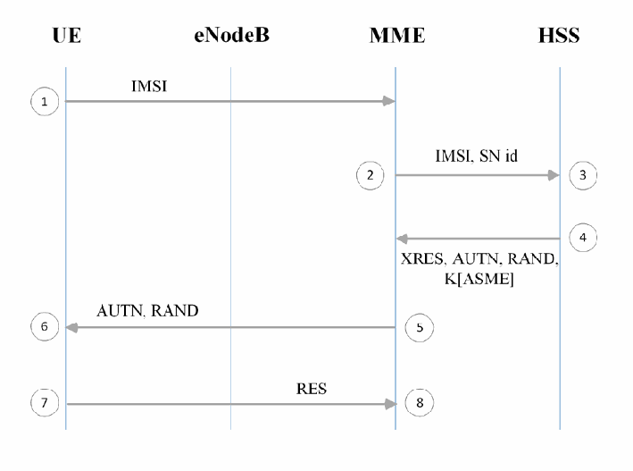
図7—認証と鍵合意プロトコル。縦の生存線 UE、eNodeB、MME、HSS と、1 から 8 の番号付きの手順からなるシーケンス図である。(1) UE が IMSI を MME へ送る。(2) MME が IMSI, SN id を HSS へ送る（3）。(4) HSS が XRES, AUTN, RAND, K[ASME] を MME へ返す。(5) MME が AUTN, RAND を UE へ送る（6）。(7) UE が RES を MME へ送る（8）。
Figure 7 - Authentication and Key Agreement Protocol
図7—認証と鍵合意プロトコル
The AKA procedure occurs as part of the UE attach process, described in Section 3.3, and provides mutual authentication between the UICC and the LTE network.
AKA手順は3.3節で説明したUEアタッチ過程の一部として実行し、UICCとLTEネットワーク間の相互認証を提供する。
AKA is begun by a UE providing its identifier to the appropriate MME (item 1 above). This identifier may be permanent, as is the case with the IMSI, or may be temporary. Examples of temporary identifiers include the Temporary Mobile Subscriber Identity (TMSI) and Globally Unique Temporary UE Identity (GUTI). After the identifier is provided to the core network, the MME provides the identifier, alongside additional cryptographic parameters and the serving network ID (SN id), to the HSS/AuC (item 2 above) these values then are used to generate an authentication vector (AUTN). To compute an AUTN, the HSS/AuC needs to use a random nonce (RAND), the secret key K, and a Sequence Number (SQN) as inputs to a cryptographic function. This function produces two cryptographic parameters used in the derivation of future cryptographic keys, alongside the expected result (XRES) and authentication token (AUTN) (item 3 above). This authentication vector is passed back to the MME for storage (item 4 above). In addition, the MME provides the AUTN and RAND to the UE, which is then passed to the USIM application (item 5 above). The USIM sends AUTN, RAND, the secret key K, and its SQN through the same cryptographic function used by the HSS/AuC (item 6 above). The result is labeled as RES, which is sent back to the MME (item 7 above). If the XRES value is equal to the RES value, authentication is successful and the UE is granted access to the network (item 8 above).
AKAは、UEが識別子を適切なMMEに提供することで始まる（上図の手順1）。識別子はIMSIのような恒久的なものでも、一時的なものでもよい。一時識別子の例としてTemporary Mobile Subscriber Identity（TMSI）とGlobally Unique Temporary UE Identity（GUTI）がある。識別子を受け取ると、MMEは追加の暗号パラメータおよびサービングネットワークID（SN ID）とともにHSS/AuCへ送る（手順2）。これらの値を用いて認証ベクトル（AUTN）を生成する。AUTNの計算には、HSS/AuCが乱数ノンス（RAND）、秘密鍵K、シーケンス番号（SQN）を暗号関数への入力として使う。この関数は、今後の暗号鍵導出に用いる2つの暗号パラメータ、期待される結果（XRES）、および認証トークン（AUTN）を生成する（手順3）。この認証ベクトルは保存のためMMEに返送する（手順4）。さらにMMEはAUTNとRANDをUEに送り、UEからUSIMアプリケーションに渡す（手順5）。USIMは、HSS/AuCが使ったものと同じ暗号関数にAUTN、RAND、秘密鍵K、自身のSQNを入力する（手順6）。その結果をRESとし、MMEへ返す（手順7）。XRESとRESが一致すれば認証は成功し、UEはネットワークへのアクセスを許可される（手順8）。
3.4 Air Interface Security
3.4 無線インターフェースのセキュリティ
The UE and the eNodeB communicate using a Radio Frequency (RF) connection commonly referred to as the air interface, which is referred to as the Uu interface. Both endpoints modulate IP packets into an RF signal that is communicated over-the-air interface; these devices then demodulate the RF signal into IP packets understandable by both the UE and EPC. The eNodeB routes these packets through the EPC while the UE uses the IP packets to perform some function. These radio waves are sent from a UE’s antenna over-the-air until they reach the antenna of the eNodeB.This over-the-air communication is not necessarily private, meaning anything within the wave path can intercept these radio waves. The figure below illustrates where in the network this is occurring.
UEとeNodeBは、一般に無線インターフェースと呼ばれる無線周波数（RF）接続を使って通信する。この接続はUuインターフェースと呼ばれる。両端点はIPパケットを無線周波数信号に変調し、その信号を無線インターフェース経由で送る。これらの機器は次に、無線周波数信号をUEとEPCの双方が解釈できるIPパケットに復調する。eNodeBはこれらのパケットをEPC経由でルーティングし、UEはIPパケットを使って何らかの機能を実行する。これらの電波はUEのアンテナから空中を伝わり、eNodeBのアンテナに届く。この無線通信が非公開であるとは限らず、電波の経路上にあるものは何でもこれらの電波を傍受できる。下図は、ネットワーク上でこれが行われる場所を示す。
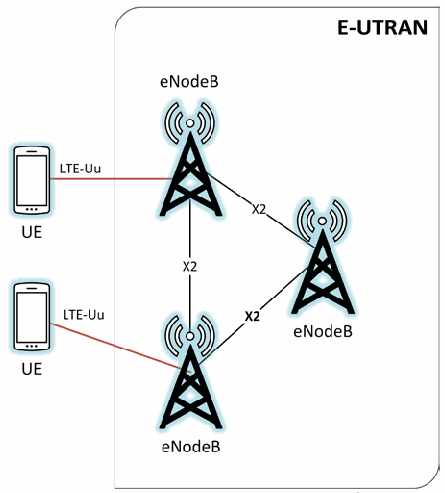
図8—無線インターフェースの位置。E-UTRAN と記された角丸の枠に eNodeB と記された 3 基の電波塔が三角形に配置され、X2 と記された線で相互に結ばれている。枠の外の左側に UE と記された携帯電話が 2 台あり、それぞれ LTE-Uu と記された赤い線で eNodeB に接続している。
Figure 8 - Highlighting the Air Interface
図8—無線インターフェースの位置
3GPP’s technical specification 33.401 directs that both the NAS and RRC control plane messages must be integrity protected. 3GPP TS 33.401 5.1.4.1 requires that “Integrity protection, and replay protection, shall be provided to NAS and RRC-signaling.” It is specified that user plane packets traveling on the Uu interface are not integrity protected. Specifically, 3GPP TS 33.401 5.1.4.1 states “User plane packets between the eNodeB and the UE shall not be integrity protected on the Uu interface.”
3GPPの技術仕様33.401では、NASおよびRRCの制御プレーンメッセージの両方に完全性保護を適用するよう定めている。3GPP TS 33.401 5.1.4.1では「完全性保護およびリプレイ保護を、NASおよびRRC信号通信に提供しなければならない」と規定する。Uuインターフェースを通過するユーザープレーンパケットには完全性保護を適用しない。具体的には、同仕様5.1.4.1は「eNodeBとUE間のUuインターフェース上のユーザープレーンパケットに完全性保護を適用してはならない」とする。
Both control plane and user plane packets communicating between the UE and eNodeB on the Uu can be confidentiality protected but this is left as optional. This statement is based on a requirement located in 3GPP TS 33.401 5.1.4.1: “User plane confidentiality protection shall be done at PDCP layer and is an operator option.” Air interface confidentiality provides a higher level of assurance that messages being sent over the air cannot be deciphered by an external entity. LTE specifies a ciphering indicator feature in 3GPP TS 22.101 [6]; this feature is designed to give the user visibility into the status of the access network encryption. Unfortunately, this feature is not widely implemented in modern mobile phone operating systems. Figure 9 and Figure 10 help to illustrate where on the network integrity and encryption are provided by LTE.
Uuインターフェース上でUEとeNodeB間を通信する制御プレーンおよびユーザープレーンのパケットには、機密性保護を適用できるが、これは任意である。これは3GPP TS 33.401 5.1.4.1の「ユーザープレーンの機密性保護はPDCP層で行わなければならず、事業者のオプションである」という要件に基づく。無線インターフェースの機密性保護により、外部の者が無線で送信されるメッセージを解読できないという、より高い保証が得られる。LTEでは3GPP TS 22.101 [6]に暗号化インジケータ機能を定めており、アクセスネットワークの暗号化状態をユーザーに知らせるよう設計されている。残念ながら、この機能は最新のモバイルOSで広く実装されていない。図9および図10は、LTEネットワーク上で完全性保護と暗号化を適用する箇所を示す。
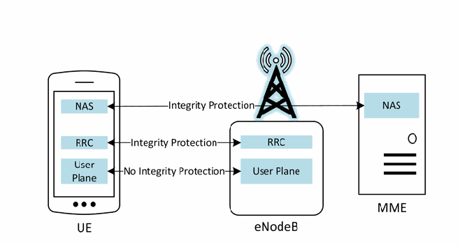
図9—完全性保護の要件。3 つの機器がある。NAS、RRC、User Plane を含む UE と記された携帯電話、RRC と User Plane を含む eNodeB と記された電波塔、NAS を含む MME と記されたサーバーである。両方向の矢印が、UE の NAS と MME の NAS（Integrity Protection と記されている）、UE の RRC と eNodeB の RRC（Integrity Protection）、UE の User Plane と eNodeB の User Plane（No Integrity Protection）を結ぶ。
Figure 9 - Integrity Protection Requirements
図9—完全性保護の要件
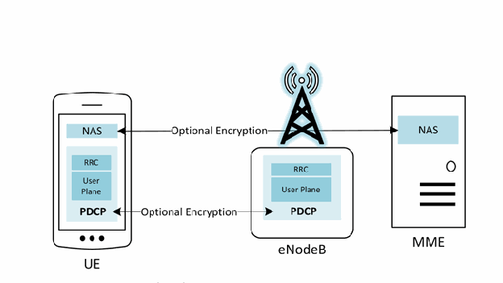
図10—機密性保護の要件。3 つの機器がある。NAS と、RRC と User Plane を含む PDCP の箱を持つ UE と記された携帯電話、RRC と User Plane を含む PDCP の箱を持つ eNodeB と記された電波塔、NAS を含む MME と記されたサーバーである。Optional Encryption と記された両方向の矢印が、UE の NAS と MME の NAS、UE の PDCP と eNodeB の PDCP を結ぶ。
Figure 10 - Confidentiality Protection Requirements
図10—機密性保護の要件
An exact order is not specified for when the LTE network must negotiate security parameters for a given connection. The TS 24.301 [10] permits the following 7 messages to be sent without security protection:
LTEネットワークが特定の接続に対するセキュリティパラメータをいつネゴシエートするか、厳密な順序は定められていない。TS 24.301 [10]では、次の7種類のメッセージをセキュリティ保護なしで送信することを認めている。
•IDENTITY REQUEST (if requested identification parameter is IMSI);
•IDENTITY REQUEST（識別要求。要求された識別パラメータがIMSIの場合）。
•AUTHENTICATION REQUEST;
•AUTHENTICATION REQUEST;
•AUTHENTICATION REJECT;
•AUTHENTICATION REJECT;
•ATTACH REJECT;
•ATTACH REJECT;
•DETACH ACCEPT (For non switch off);
•DETACH ACCEPT（電源オフ以外の場合）;
•TRACKING AREA UPDATE REJECT;
•TRACKING AREA UPDATE REJECT;
•SERVICE REJECT.
•SERVICE REJECT.
When a message that requires protection needs to be sent the network must establish security parameters and agree on algorithms. This establishment is initiated by the sending of the Security Mode Command (SMC). The SMC dictates that the UE and serving network must initiate a cryptographic algorithm negotiation in order to select appropriate algorithms for: RRC ciphering and integrity protection on the Uu interface, user plane cyphering on the Uu interface, and NAS cyphering and NAS integrity protection between UE and MME. It is important to note that the network selects the algorithm based upon security capabilities of the UE and a configured list of available security capabilities on the serving network.
保護が必要なメッセージを送信する際、ネットワークはセキュリティパラメータを確立し、使用するアルゴリズムに合意する必要がある。この確立はSecurity Mode Command（SMC）の送信によって開始する。SMCは、UEとサービングネットワークが、次の各項目に適切なアルゴリズムを選択するため、暗号アルゴリズムのネゴシエーションを開始しなければならないと定める。対象は、Uuインターフェース上のRRC暗号化と完全性保護、Uuインターフェース上のユーザープレーン暗号化、UEとMME間のNAS暗号化とNAS完全性保護である。ネットワークは、UEのセキュリティ機能と、サービングネットワークに設定された利用可能なセキュリティ機能の一覧に基づいてアルゴリズムを選択することに留意することが重要である。
Separate Access Stratum (AS) and Non Access Stratum (NAS) level SMC procedures are required to configure security on each applicable portion of the protocol stack. The AS SMC is used for configuring RRC and user plane level protections, while the NAS SMC is used for configuring NAS level protections.
プロトコルスタックの該当部分それぞれにセキュリティを設定するには、アクセス層（AS）と非アクセス層（NAS）のSMC手順を別々に実行する必要がある。AS SMCはRRCおよびユーザープレーンの保護を設定し、NAS SMCはNAS層の保護を設定する。
Once an AKA run has occurred, and the NAS and optionally the AS SMCs are sent, a security context is generated. A security context is a collection of session keys and parameters used to protect either the NAS or AS. Long term information such as K, or other identifiers like the IMEI and IMSI are not stored within a security context. Typically, only the keys from KASME and downward within the key hierarchy are stored. When a UE deregisters from an eNodeB, the previous security context can be reused, avoiding a superfluous AKA run, which may add network congestion and require additional computing power on behalf of the core network.
AKAが実行され、NAS SMCと、任意でAS SMCが送信されると、セキュリティコンテキストが生成される。セキュリティコンテキストは、NASまたはASのいずれかを保護するために使用されるセッション鍵とパラメータの集合である。Kのような長期情報や、IMEIやIMSIのような他の識別子は、セキュリティコンテキスト内には格納されない。通常、鍵階層のうちKASME以下の鍵のみが格納される。UEがeNodeBから登録解除した場合、以前のセキュリティコンテキストを再利用でき、不要なAKAの実行を回避できる。不要なAKAの実行は、ネットワークの輻輳を増し、コアネットワーク側に追加の計算能力を要求するおそれがある。
3.5 E-UTRAN Security
3.5 E-UTRANのセキュリティ
The radio access network and associated interfaces make up the E-UTRAN portion of the LTE network, and which is the midway between a handset and an MNO’s core network. Handover is one of the most important functions of a cellular network. This allows the user the ability to be moving, such as traveling on a highway, and maintain call connection. Base stations will often need to communicate between themselves to enable this “mobility,” and they do so via the X2 interface. 3GPP specifies multiple security mechanisms to ensure a secure handoff of call related information.
無線アクセスネットワークと関連インターフェースはLTEネットワークのE-UTRAN部分を構成し、端末とMNOのコアネットワークの中間に位置する。ハンドオーバーは携帯電話ネットワークの最も重要な機能の一つである。これにより、ユーザーは高速道路を移動するなど移動中でも通話を継続できる。モビリティを実現するため、基地局同士が通信する必要があり、X2インターフェースを使ってこれを行う。3GPPは、通話関連情報を安全に引き継ぐための複数のセキュリティ機構を定めている。
Two types of handovers exist: X2 handover and S1 handover. During an S1 handover the MME is aware that a handover is going to occur before it happens. Within an X2 handover, the MME is unaware and the transition occurs purely between eNodeBs via the X2 interface. There are unique security considerations for both methods of handover. With an S1 handover, the MME can refresh the cryptographic parameters used to protect the air interface before the connection is severed. With an X2 handover, fresh keying material can only be provided after the handover for use in the next handover.
ハンドオーバーには、X2ハンドオーバーとS1ハンドオーバーの2種類がある。S1ハンドオーバーでは、MMEは発生前にハンドオーバーを認識する。X2ハンドオーバーではMMEは認識せず、X2インターフェースを介してeNodeB同士で直接移行する。どちらの方式にも固有のセキュリティ上の考慮事項がある。S1ハンドオーバーでは、接続が切断される前にMMEが無線インターフェース保護用の暗号パラメータを更新できる。X2ハンドオーバーでは、次のハンドオーバーに使う新しい鍵素材を提供できるのは、ハンドオーバーの後に限られる。
When handover occurs, new keys are generated, partly separating the new session from the previous one, although a new master session key (i.e., KASME) is not generated. The KeNB is used, alongside other cryptographic parameters and the cell ID of the new eNodeB, to generate KeNB*, which is used to protect the new session after handover occurs. It is of note that the source base station and MME control key derivation and the new eNodeB is not meant have knowledge of the keys used in the original eNodeB session.
ハンドオーバーが発生すると新しい鍵が生成され、新しいセッションは以前のセッションから部分的に分離されるが、新しいマスターセッション鍵（すなわちKASME）は生成されない。KeNBは、他の暗号パラメータおよび新しいeNodeBのセルIDとともに用いられてKeNB*を生成し、KeNB*はハンドオーバー後の新しいセッションの保護に使用される。なお、鍵導出を制御するのは移動元の基地局とMMEであり、新しいeNodeBは元のeNodeBセッションで使用された鍵を知ることを想定されていない。
3.6 Backhaul Security
3.6 バックホールのセキュリティ
3GPP has specified optional capabilities to provide confidentiality protection to various LTE network interfaces. Section 3.4 discuses optional confidentiality protection provided between UEs and eNodeBs on the Uu interface as well as communication between eNodeBs on the X2 interface. According to the LTE technical specifications 33.401, confidentiality protection is also optional between eNodeBs and the Evolved Packet Core S1 interface. 3GPP specifies that the use of IPsec in accordance with 3GPP TS 33.2104 NDS/IP should be implemented to provide confidentiality on the S1 interface but the specification goes on to note that if the S1 interface is trusted or physically protected, confidentiality protection is an operator option. ‘Trusted’ or ‘physically protected’ are not further defined within the 3GPP specification.
3GPPは、LTEネットワークの各種インターフェースに機密性保護を提供する任意機能を規定している。3.4節では、Uuインターフェース上のUEとeNodeB間、およびX2インターフェース上のeNodeB間の通信に対する任意の機密性保護について説明した。LTE技術仕様33.401によれば、eNodeBとEvolved Packet CoreのS1インターフェース間でも機密性保護は任意である。3GPPは、S1インターフェースで機密性を提供するために、3GPP TS 33.2104 NDS/IPに従ったIPsecの使用を実装すべきであると規定している。ただし仕様は、S1インターフェースが信頼できる、または物理的に保護されている場合には、機密性保護は事業者の任意であるとも記している。3GPP仕様では「信頼できる」「物理的に保護されている」の定義は示されていない。
The endpoints connected by the the S1 interface are often miles apart. Any data being sent over the LTE network has the potential to travel any number of miles from cell tower to the EPC facility. The physical means to provide this backhaul connection can vary, some technologies include; Microwave, Satellite, Ethernet, Underground Fiber, etc. Physically protecting the S1 interface requires the MNO to have security controls in place at every location through which this connection is routed. It is very likely the cellular MNO does not own or operate the physical connection used to backhaul LTE network traffic, making it difficult for the MNO to ensure the S1 interface is physically protected. The network operator may depend on other network security measures (e.g., MPLS VPN, layer 2 VPN) to protect the traffic traversing the S1 interface and ensure this interface is trusted.
S1インターフェースで接続するエンドポイントは、数マイル離れていることが多い。LTEネットワーク上で送信するデータは、セルタワーからEPC設備まで何マイルも伝送される可能性がある。バックホール接続の物理的な伝送手段はさまざまで、マイクロ波、衛星、イーサネット、地下光ファイバーなどがある。S1インターフェースを物理的に保護するには、接続経路上のすべての場所でMNOがセキュリティ管理策を実施する必要がある。携帯電話MNOはLTEトラフィックのバックホールに使う物理接続を所有・運用していない可能性が高く、そのためS1インターフェースの物理的保護を確保しにくい。ネットワーク事業者は、S1インターフェースを通過するトラフィックを保護し、同インターフェースを信頼できる状態にするため、MPLS VPNやレイヤー2 VPNなど他のネットワークセキュリティ対策に依存する場合がある。
![Figure 11 - Protecting the S1 Interface. On the left, a phone labeled UE connects to an eNodeB by a line labeled LTE-Uu. A rounded box labeled E-UTRAN contains three towers labeled eNodeB, connected by lines labeled X2. From the right-hand eNodeB, a red dashed line labeled S1-MME and a red solid line labeled S1-U go to a red-outlined firewall labeled SEG at the edge of a rounded box labeled EPC. Inside the EPC, a dashed line labeled S1-MME continues from SEG to MME, and a solid line labeled S1-U continues from SEG to S-GW.](assets/187/p0028-figure-01.png)
図11—S1インターフェースの保護。左側の UE と記された携帯電話は、LTE-Uu と記された線で eNodeB に接続する。E-UTRAN と記された角丸の枠には eNodeB と記された 3 基の電波塔があり、X2 と記された線で結ばれている。右側の eNodeB から、S1-MME と記された赤い破線と S1-U と記された赤い実線が、EPC と記された角丸の枠の縁にある、SEG と記された赤枠のファイアウォールへ延びる。EPC の中では、SEG から MME へ S1-MME と記された破線が、SEG から S-GW へ S1-U と記された実線が続く。
Figure 11 - Protecting the S1 Interface
図11—S1インターフェースの保護
An all IP-based system introduces certain security concerns that are not applicable to older cellular networks. Prior to LTE if an adversary wanted to intercept traffic on a cellular network, specialized hardware was required. With LTE the transport mechanism between the eNodeB and the EPC is all IP based communications. The only things required to intercept traffic are basic networking experience, computer, network cable, and access to a switch port. If confidentiality is not provided on the S1 interface all traffic being intercepted is sent in clear text.
すべてIPベースのシステムでは、旧式の携帯電話ネットワークには当てはまらないセキュリティ上の懸念が生じる。LTE以前、携帯電話ネットワークの通信を傍受するには特殊な機器が必要だった。LTEでは、eNodeBとEPC間の伝送機構がすべてIPベースの通信である。通信の傍受に必要なのは、基本的なネットワーク知識、コンピューター、ネットワークケーブル、およびスイッチポートへのアクセスだけである。S1インターフェースに機密性保護がなければ、傍受したすべてのトラフィックが平文で送信される。
3GPP TS 33.210 specifies, “For native IP-based protocols security shall be provided at the network layer. The security protocols to be used at these network layer are the IETF defined IPsec security protocols as specified in RFC-4301 and in RFC-2401”.5 This 3GPP document introduces the notion of Security Domains and using Security Gateways (SEG) or firewalls at the edge of these domains in order to provide security. Security domains are “networks that are managed by a single administrative authority” [3]. These are an important delineation of LTE networks. However, security domains are ambiguously defined which can lead to different interpretations and documentation for security domains. An example of a security domain could be that all of the EPC components and communication between them are hosted in the same datacenter, with physical security controls provided by the MNO. It could also mean that an MNO defines all components of the core as a single security domain because the same administrative group manages them, even though they are spread geographically throughout the country. Confidentiality is provided by initiating an IPsec tunnel at the eNodeBs for traffic traveling over the (potentially not physically secure) S1 interface and terminating the tunnel at the security gateway placed at the edge of the Security Domain where the EPC is hosted.
3GPP TS 33.210は「ネイティブIPベースのプロトコルでは、ネットワーク層でセキュリティを提供しなければならない。このネットワーク層で使用するセキュリティプロトコルは、RFC-4301およびRFC-2401に規定されたIETF定義のIPsecセキュリティプロトコルとする」と規定する。5この3GPP文書は、セキュリティドメインの概念を導入し、ドメインの境界にセキュリティゲートウェイ（SEG）またはファイアウォールを設置してセキュリティを確保する。セキュリティドメインとは「単一の管理権限によって管理されるネットワーク」である[3]。これはLTEネットワークを区分するうえで重要だが、定義が曖昧で、解釈や文書化が異なる可能性がある。例えば、EPCのすべての構成要素と相互通信を1つのデータセンターでホストし、MNOが物理的セキュリティ管理策を提供する領域を1つのセキュリティドメインとできる。また、コアの構成要素が国内各地に分散していても、同じ管理グループが運用するため、MNOがコア全体を1つのセキュリティドメインと定義する場合もある。機密性は、物理的に安全とは限らないS1インターフェース上のトラフィックを保護するため、eNodeBでIPsecトンネルを開始し、EPCをホストするセキュリティドメインの境界に置いたセキュリティゲートウェイで終端することで確保する。
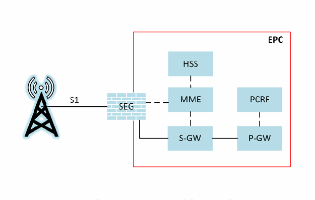
図12—セキュリティゲートウェイの構成例。左の電波塔は、S1 と記された線で、EPC と記された赤枠の縁にある SEG と記されたファイアウォールに接続する。EPC の中では、SEG は MME と破線で、S-GW と実線で結ばれ、HSS と MME、MME と S-GW は破線で、S-GW と P-GW は実線で、PCRF と P-GW は破線で結ばれている。
Figure 12 - Sample Illustration of Security Gateways
図12—セキュリティゲートウェイの構成例
The use of IPsec on the S1 interface will require endpoints terminating the IPsec tunnel to be provisioned with pre-shared keys or digital certificates. The use of a scalable system such as Public Key Infrastructure (PKI) is likely to be utilized for a commercial LTE network. The security parameters used to establish the encrypted connection can be dynamically negotiated using Internet Key Exchange (IKE) based on policies configured at the endpoints. Both endpoints of the IPsec tunnel (eNodeB & SEG) contain digital certificates or pre-shared keys, provisioned either manually or dynamically from the PKI system. If digital certificates are not pre-provisioned a Certificate Authority (CA) can be used to issue digital certificates and will need to be accessible to endpoints on the LTE network. For more information regarding Public Key Technology reference NIST SP 800-32 [26].
S1インターフェースでIPsecを使用するには、IPsecトンネルを終端する各エンドポイントに事前共有鍵またはデジタル証明書を設定する必要がある。商用LTEネットワークでは、公開鍵基盤（PKI）のような拡張性のあるシステムを利用する可能性が高い。暗号化接続の確立に用いるセキュリティパラメータは、各エンドポイントに設定されたポリシーに基づき、Internet Key Exchange（IKE）で動的にネゴシエートできる。IPsecトンネルの両端（eNodeBとSEG）にはデジタル証明書または事前共有鍵を設定し、手動またはPKIシステムから動的に配布する。デジタル証明書を事前設定しない場合、認証局（CA）が証明書を発行できるが、LTEネットワーク上のエンドポイントからアクセス可能でなければならない。公開鍵技術の詳細はNIST SP 800-32 [26]を参照。
3.7 Core Network Security
3.7 コアネットワークのセキュリティ
As previously mentioned, 3GPP has specified optional security capabilities for various connections within LTE networks. However, even though 3GPP has noted in its standards that since LTE has introduced an all IP-based network, there needs to be more focus on security of the EPC than there was in 2G/3G since there is no specific security guidance tailored for the EPC [3]. Traditional IP network security guidelines and operational procedures may be beneficial. Since the core network handles the majority of control plane signaling, security needs to be a primary consideration.
前述のとおり、3GPPはLTEネットワーク内のさまざまな接続に任意のセキュリティ機能を規定している。しかし、3GPPは標準の中で、LTEではネットワーク全体がIPベースになったため、EPCに特化したセキュリティガイダンスがない以上、2G/3GよりもEPCのセキュリティに重点を置く必要があると述べている[3]。従来のIPネットワーク向けセキュリティガイドラインや運用手順が役立つ場合がある。コアネットワークは制御プレーン信号通信の大半を扱うため、セキュリティを最優先で考慮する必要がある。
As specified in TS 33.210, the LTE network must be logically and physically divided into different security domains. If any components of the core are in different security domains then traffic between them is required to be routed through an SEG using IPsec for encryption and integrity protection [3]. Due to the ambiguities associated with defining a security domain, an operator’s core network may be considered one security domain. This implies a lack of security on standard communication between core LTE network components. If this is the case, then all of the signaling and user traffic being transmitted in the core would be transmitted in the clear, without confidentiality protection. However, if different pieces of the core are defined to exist in distinct security domains, then traffic must be encrypted using IPsec between them. To ensure that user and control data is protected in the appropriate places in the core network, careful consideration should be given to how security domains are defined for a network. Confidentiality protection may be implemented between different components of the core to ensure that the user and signaling traffic is protected.
TS 33.210では、LTEネットワークを論理的および物理的に複数のセキュリティドメインへ分割しなければならないと規定する。コアの構成要素が別々のセキュリティドメインに属する場合、それらの間のトラフィックは暗号化と完全性保護のため、IPsecを使用するSEG経由でルーティングしなければならない[3]。セキュリティドメインの定義が曖昧なため、事業者のコアネットワーク全体が1つのセキュリティドメインと見なされることがある。その場合、コアLTEネットワークの構成要素間の通常通信にはセキュリティがなく、コア内で送信される信号通信およびユーザートラフィックはすべて機密性保護なしの平文となる。一方、コアの各部分を別個のセキュリティドメインとして定義する場合、ドメイン間のトラフィックをIPsecで暗号化しなければならない。コアネットワークの適切な場所でユーザーデータと制御データを保護するには、ネットワークのセキュリティドメインをどのように定義するかを慎重に検討すべきである。ユーザーおよび信号通信のトラフィックを保護するため、コアの異なる構成要素間で機密性保護を実装してもよい。
Currently, 3GPP is working on standards for Security Assurance Methodology (SECAM) for 3GPP nodes. The main document, TR 33.805, "studies methodologies for specifying network product security assurance and hardening requirements, with associated test cases when feasible, of 3GPP network products" [8]. There are plans to have accompanying documents to TR 33.805 that will have specific security considerations for each component of the core. 3GPP will first create the Security Assurance Specifications (SCAS) for the MME as a trial. Once the initial SCAS is completed for the MME, the 3GPP SA3 working group, the group that defines LTE security standards, will continue work on SCAS for the other network product classes. The MME SCAS, TR 33.806, is currently still in draft and addresses the security assurance specification for the MME. 3GPP is partnering with GSMA Network Equipment Security Assurance Group (NESAG) to establish an accreditation process and resolution process to evaluate products against the requirements defined in the SCAS. Core network security does not have any rigorous security specifications or requirements in the 3GPP standards. Future development of SCAS may require specific security controls to be implemented within the individual core components.
現在、3GPPは3GPPノード向けのSecurity Assurance Methodology（SECAM）標準を策定している。主要文書TR 33.805は「実現可能な場合には関連するテストケースを含め、3GPPネットワーク製品のセキュリティ保証・強化要件を規定する方法論を検討する」[8]。TR 33.805を補足し、コアの各構成要素に固有のセキュリティ上の考慮事項を示す文書も予定されている。3GPPは試行として、まずMME向けのSecurity Assurance Specifications（SCAS）を作成する。MME向け初版SCASの完成後、LTEセキュリティ標準を定める3GPP SA3作業部会は、他のネットワーク製品クラスについてSCAS策定を続ける。MME向けSCASであるTR 33.806は現在も草案であり、MMEのセキュリティ保証仕様を扱う。3GPPはGSMA Network Equipment Security Assurance Group（NESAG）と協力し、SCASに定める要件に照らして製品を評価する認定・解決プロセスを構築している。3GPP標準には、コアネットワークセキュリティに関する厳格な仕様または要件がない。今後SCASを策定する過程で、個々のコア構成要素に特定のセキュリティ管理策の実装が求められる可能性がある。
4 Threats to LTE Networks
4 LTEネットワークに対する脅威
This section explores general classes of threats to LTE networks grouped by related threat categories. It is of note that the 3GPP SA3 Working Group explored threats to LTE networks and authored a document listing many of threats addressed in this section [7]. Threat analyses external to 3GPP have been performed, such as [16], [17], and [18], and were used as input to this analysis. Many of the threats listed below have been identified via academic research, while others may be documented and reported real-world attacks that have occurred in deployed cellular systems. Organizations can use the higher-level threat categories presented in this section as a starting point for their own detailed threat models.
本節では、関連する脅威カテゴリごとに分類したLTEネットワークへの一般的な脅威を検討する。3GPP SA3作業部会もLTEネットワークへの脅威を調査し、本節で扱う脅威の多くを記載した文書を作成している[7]。3GPP以外でも[16]、[17]、[18]などの脅威分析が行われており、本分析の参考とした。以下の脅威の多くは学術研究で特定されたものであり、ほかには実運用中の携帯電話システムで発生した現実の攻撃として記録・報告されているものもある。組織は、本節に示す上位の脅威カテゴリを、自組織の詳細な脅威モデルを作る出発点として利用できる。
While some of these threats may have an impact on network availability and resiliency, others are limited to user data integrity and confidentiality. Additionally, most of the threats mentioned here would only affect a limited portion of the network. With increased availability of low cost LTE hardware and software [21] many threats listed below can be implemented with a low level of complexity [19] [25].
これらの脅威には、ネットワークの可用性やレジリエンスに影響するものもあれば、ユーザーデータの完全性や機密性だけに影響するものもある。また、ここで挙げる脅威の多くはネットワークの限られた部分にしか影響しない。低価格のLTEハードウェアおよびソフトウェアが入手しやすくなるにつれ[21]、以下の多くの脅威は比較的低い複雑さで実行できる[19][25]。
4.1 General Cybersecurity Threats
4.1 一般的なサイバーセキュリティ上の脅威
LTE infrastructure components (e.g., eNodeB, MME, S-GW) may run atop of commodity hardware, firmware, and software, making it susceptible to publicly known software flaws pervasive in general purpose operating systems (e.g., FreeBSD and other *nix variants) or other software applications. Although heavy customization of systems may occur, commodity hardware and well-known operating systems that are utilized should be identified and understood. This implies that these systems need to be properly configured and regularly patched to remediate known vulnerabilities, such as those listed in the National Vulnerability Database [28]. The following subsections will address malware threats to specific network components and the management of an LTE network.
LTE基盤の構成要素（eNodeB、MME、S-GWなど）は汎用ハードウェア、ファームウェア、ソフトウェア上で動作する場合があり、FreeBSDやその他の*nix系など汎用OSやアプリケーションに広く存在する、公に知られているソフトウェア欠陥の影響を受けやすい。システムに大幅なカスタマイズが施されている場合でも、使用する汎用ハードウェアと既知のOSを特定し、理解しておくべきである。これは、既知の脆弱性（National Vulnerability Database [28]に掲載されたものなど）を解消できるよう、これらのシステムを適切に設定し、定期的にパッチを適用する必要があることを意味する。以下の各小節では、特定のネットワーク構成要素へのマルウェアの脅威と、LTEネットワークの管理について扱う。
4.1.1 Malware Attacks on UE’s
4.1.1 UEに対するマルウェア攻撃
Malicious code infecting a mobile device's operating system, other firmware, and installed applications could prevent a UE from accessing a cellular network. Malware could directly attack the baseband OS and its associated firmware. Attacking the baseband OS could change important configuration files for accessing the network or prevent important routines from running, such as those interpreting the signaling from a base station. Either of these would cause a denial of service.
モバイルデバイスのOS、その他のファームウェア、インストール済みアプリケーションに感染した悪意あるコードにより、UEが携帯電話ネットワークへアクセスできなくなる可能性がある。マルウェアはベースバンドOSと関連ファームウェアを直接攻撃することもある。ベースバンドOSへの攻撃は、ネットワークアクセス用の重要な設定ファイルを変更したり、基地局からの信号を解釈するルーチンなど重要な処理を妨げたりする可能性がある。いずれの場合もサービス拒否につながる。
4.1.2 Malware Attacks Impacting RAN Infrastructure
4.1.2 RAN基盤に影響するマルウェア攻撃
Malware installed on a mobile device, or infecting a mobile device's operating system and other firmware, could be part of a botnet launching an attack against a carrier’s radio network infrastructure. A Distributed Denial of Service (DDoS) attack could be launched via a continuous stream of attach requests, or requests for high bandwidth information and services. An unintentional DDoS attack on a carrier’s radio infrastructure has been seen to occur via a mobile application making a large number of update requests [11]. Malware can also compromise base station operating systems causing unexpected and undesirable equipment behavior.
モバイルデバイスにインストールされたマルウェア、またはモバイルデバイスのOSや他のファームウェアに感染したマルウェアは、通信事業者の無線ネットワーク基盤を攻撃するボットネットの一部となる可能性がある。アタッチ要求を連続送信したり、高帯域幅を要する情報やサービスを繰り返し要求したりして、分散型サービス拒否（DDoS）攻撃を仕掛けられる。モバイルアプリケーションが大量の更新要求を送った結果、意図しないDDoS攻撃が通信事業者の無線基盤で発生した事例もある[11]。マルウェアは基地局のOSを侵害し、予期しない望ましくない機器動作を引き起こすこともある。
4.1.3 Malware Attacks Impacting Core Infrastructure
4.1.3 コア基盤に影響するマルウェア攻撃
Malware infecting components a carrier’s core network infrastructure would have the potential to log network activity, modify the configuration of critical communications gateways, and sniff user traffic (e.g., call traffic, SMS/MMS) depending on which components are infected. These types of attacks have been previously observed in GSM networks [22], but as of this time there is no known example of this attack within backend LTE infrastructure. A Distributed Denial of Service (DDoS) attack against an MME could be launched via a continuous stream of attach requests.
通信事業者のコアネットワーク基盤の構成要素に感染したマルウェアは、感染した構成要素に応じて、ネットワーク活動の記録、重要な通信ゲートウェイ設定の変更、ユーザートラフィック（通話、SMS/MMSなど）の盗聴を行う可能性がある。この種の攻撃はGSMネットワークで過去に確認されているが[22]、現時点でバックエンドLTE基盤における既知の事例はない。MMEに対するDDoS攻撃は、アタッチ要求を連続送信して実行できる。
4.1.4 Unauthorized OAM Network Access
4.1.4 OAMネットワークへの不正アクセス
Operational and Access Management (OAM) networks are a vital part of an operational cellular network, providing remote access into geographically dispersed components of the network. These OAM network interfaces provide quick access to network components, allowing MNOs to manage and tune networks from one central location. Poor design, lax configuration management, and lack of hardening of these management networks and interfaces create a serious security risk to the network’s operational stability [7]. Unauthorized access to management interfaces can potentially allow malicious and unintentional misconfigurations of critical network systems.
運用・アクセス管理（OAM）ネットワークは、運用中の携帯電話ネットワークに不可欠であり、地理的に分散したネットワーク構成要素へのリモートアクセスを提供する。OAMネットワークのインターフェースによりネットワーク構成要素へ迅速にアクセスでき、MNOは1か所からネットワークを管理・調整できる。これらの管理ネットワークやインターフェースの設計不備、設定管理の甘さ、堅牢化の不足は、ネットワーク運用の安定性に深刻なセキュリティリスクをもたらす[7]。管理インターフェースへの不正アクセスは、重要なネットワークシステムの悪意ある、または意図しない設定変更につながるおそれがある。
4.2 Rogue Base Stations
4.2 不正基地局
Rogue base stations are unlicensed base stations that are not owned and operated by an authentic MNO. They broadcast a cellular network masquerading as a legitimate carrier network. The necessary hardware to construct these devices can be inexpensively obtained using commercial off-the-shelf (COTS) hardware. The software required to operate a 2G (GSM) base station is open source and freely available [20], and can be configured to operate as a rogue base station.
不正基地局とは、正規のMNOに所有・運用されていない無許可の基地局である。正規の通信事業者ネットワークを装った携帯電話ネットワークを送信する。こうした機器の構築に必要なハードウェアは、市販既製品（COTS）を使って安価に入手できる。2G（GSM）基地局を動作させるソフトウェアはオープンソースとして無料で入手でき[20]、不正基地局として動作するよう設定できる。
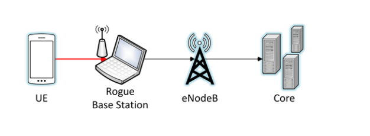
図13—不正基地局の例。左から右へ、UE と記された携帯電話が赤い線で、アンテナ付きのノートパソコン（Rogue Base Station と記されている）に接続し、ノートパソコンから eNodeB と記された電波塔へ矢印が、eNodeB から Core と記されたサーバー群へ矢印が延びる。
Figure 13 - Example Rogue Base Station
図13—不正基地局の例
Rogue base stations exploit the fact that mobile handsets will attach to whichever base station is broadcasting as its preferred carrier network and is transmitting at the highest power level. Therefore, when a rogue base station is physically proximate to a mobile handset while transmitting at very high power levels, the handset may attempt to connect to the malicious network [23]. Mobile handsets are engineered to be backwards compatible with older cellular systems providing a consistent user experience during mobility. Rogue base stations take advantage of this backward compatibility and exploit weaknesses in these older cellular systems. At the time of this writing, a majority of rogue base stations broadcast a 2G GSM cellular network. The security protections offered by GSM lack mutual authentication between the handset and cellular network, and strong cryptographic algorithms with keys of sufficient length. Additionally, there is no requirement mandating that the 2G GSM air interface is encrypted.
不正基地局は、モバイル端末が、自らの優先キャリアネットワークとして電波を発し、かつ最も高い出力で送信している基地局であれば、どれにでも接続するという性質を悪用する。したがって、不正基地局が端末の近くにあり、非常に高い出力で送信すると、端末が悪意あるネットワークへの接続を試みる場合がある[23]。モバイル端末は移動中も安定したユーザー体験を提供するため、旧式の携帯電話システムとの後方互換性を備えている。不正基地局はこの互換性を利用し、旧式システムの弱点を突く。本書執筆時点で、不正基地局の多くは2G GSMネットワークを送信する。GSMのセキュリティ保護には、端末と携帯電話ネットワーク間の相互認証がなく、十分な長さの鍵を使う強力な暗号アルゴリズムも欠けている。さらに、2G GSMの無線インターフェースに暗号化を義務付ける要件もない。
4.2.1 Device and Identity Tracking
4.2.1 デバイスと識別情報の追跡
As previously stated, both the IMSI (UICC) and IMEI (handset) act as unique identifiers. Both of these identifiers can be indicators of who owns a mobile handset and where a device is physically located. It is commonplace today for individuals to constantly keep their mobile devices physically near them, and if a rogue base station is used to intercept traffic in an area, such as where you reside, the operator of the rogue network may be able to identify whether a specific individual is, or is not, residing within a specific location. This poses a threat to privacy because an eavesdropper can determine if the subscriber is in a given location. Data needed for geolocation is available via signaling channels, and is sent over the air interface during handset attach and authentication.
前述のとおり、IMSI（UICC）とIMEI（端末）はどちらも一意の識別子として機能する。どちらの識別子も、モバイル端末の所有者やデバイスの物理的な位置を示す手掛かりになり得る。今日、人々はモバイルデバイスを常に身近に置くことが一般的である。居住地などの地域で不正基地局を使って通信を傍受すると、不正ネットワークの運用者は、特定の人物がその場所に住んでいるかどうかを識別できる可能性がある。盗聴者が加入者の所在を特定できるため、これはプライバシー上の脅威となる。位置特定に必要なデータは信号チャネルから取得でき、端末のアタッチおよび認証中に無線インターフェースで送信される。
4.2.2 Downgrade Attacks
4.2.2 ダウングレード攻撃
Using a rogue base station broadcasting at a high power level, an attacker can force a user to downgrade to either GSM or UMTS. As of the time of this writing, there are no significant, publicly known weaknesses in the cryptographic algorithms used to protect the confidentiality and integrity of the UMTS air interface. Unfortunately, significant weaknesses exist for the 2G GSM cryptographic algorithms used to protect the confidentiality and integrity of the air interface. Examples of broken 2G cryptographic algorithms are A5/1 and A5/2 [15]. Depending on the algorithm negotiated while attaching to the rogue base station, the air interface cryptographic algorithms chosen to protect the air interface may be cryptographically broken, leading to a loss of call and data confidentiality.
攻撃者は、高出力で送信する不正基地局を使い、ユーザーをGSMまたはUMTSへ強制的にダウングレードできる。本書執筆時点で、UMTSの無線インターフェースの機密性と完全性を保護する暗号アルゴリズムに、重大で公知の弱点はない。一方、2G GSMの無線インターフェースの機密性と完全性を保護する暗号アルゴリズムには重大な弱点がある。破られた2G暗号アルゴリズムの例としてA5/1とA5/2がある[15]。不正基地局との接続時にネゴシエートするアルゴリズムによっては、無線インターフェースを保護する暗号アルゴリズムが解読可能となり、通話やデータの機密性が失われる。
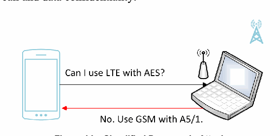
図14—簡略化したダウングレード攻撃。左に携帯電話、右にアンテナ付きのノートパソコンがあり、右上の隅に薄い色の電波塔が描かれている。携帯電話からノートパソコンへの黒い矢印に「Can I use LTE with AES?」、ノートパソコンから携帯電話へ戻る赤い矢印に「No. Use GSM with A5/1.」と記されている。
Figure 14 – Simplified Downgrade Attack
図14—簡略化したダウングレード攻撃
While GSM is out of scope for this document, real world deployments utilize GSM networks to connect with LTE networks, which bring this into scope.
GSMは本書の対象外だが、実運用ではLTEネットワークと接続するためにGSMネットワークが使われており、そのため本書の対象範囲に含まれる。
4.2.3 Preventing Emergency Phone Calls
4.2.3 緊急通話の妨害
Attackers using a rogue base station could prevent mobile devices physically close to the rogue base station from accessing emergency services. This occurs when the rogue station fails to forward user traffic onward to the MNO. If this attack occurs during an emergency, it could prevent victims from receiving assistance from public safety services and first responders. This attack may be detectable, since the UE believes it has cellular service but is unable to make calls or send/receive data. This attack takes advantage of another vector that comes into play while making emergency phone calls when the preferred network is not available. When making an emergency phone call the UE might attach and attempt to send the call through a rogue base station, even if the base station is not masquerading as a legitimate network. There is a risk that the rogue base station will not forward the emergency call appropriately.
不正基地局を使う攻撃者は、その近くにいるモバイルデバイスが緊急サービスへアクセスできないよう妨害できる。これは、不正基地局がユーザートラフィックをMNOへ転送しない場合に起きる。この攻撃が緊急時に発生すると、被害者が公共安全機関や初動対応者から支援を受けられなくなる可能性がある。UEは携帯電話サービスがあると認識しているのに、通話やデータの送受信ができないため、攻撃を検知できる場合がある。この攻撃は、優先ネットワークを利用できないときに緊急通話を発信する際の仕組みも悪用する。UEは、不正基地局が正規ネットワークを装っていない場合でも、緊急通話時にその基地局へアタッチして通話を送ろうとすることがある。不正基地局が緊急通話を適切に転送しない危険がある。
4.2.4 Unauthenticated REJECT Messages
4.2.4 未認証のREJECTメッセージ
As stated in section 3.4, during the UE attach procedure certain messages can be sent before security parameters are negotiated. One of these unauthenticated messages is the ATTACH REJECT message, which prevents a UE from completing the attach procedure. A rogue base station coercing a UE to participate in a UE attach procedure can send this unauthenticated ATTACH REJECT message. In response to receiving this message, a UE will no longer attempt to attach to this, or other LTE networks. Since the ATTACH REJECT message is sent even before the UE can authenticate the network, it is unable to distinguish the rogue base station from a real one. This can cause a Denial of Service (DoS) that may persist until a hard reboot of the UE is performed. Certain baseband implementations will not automatically try to reconnect if this ATTACH REJECT message is received [25].
3.4節で述べたとおり、UEアタッチ手順中には、セキュリティパラメータのネゴシエーション前に送信できるメッセージがある。その一つであるATTACH REJECTメッセージは、UEのアタッチ手順を完了させない。不正基地局は、UEをアタッチ手順に参加させたうえで、未認証のATTACH REJECTメッセージを送信できる。これを受信したUEは、そのネットワークにも他のLTEネットワークにも再度アタッチしようとしなくなる。ATTACH REJECTはUEがネットワークを認証する前に送信されるため、UEは不正基地局と正規基地局を区別できない。このため、UEをハードリブートするまで続くサービス拒否（DoS）が発生する可能性がある。一部のベースバンド実装では、このATTACH REJECTを受信すると自動的に再接続を試みない[25]。
Similarly, the TRACKING AREA UPDATE REJECT message can be sent by a rogue base station in the same manner, and may have the same effect as the ATTACH REJECT message.
同様に、不正基地局はTRACKING AREA UPDATE REJECTメッセージも同じ方法で送信でき、ATTACH REJECTと同じ影響が生じる可能性がある。
4.3 Air Interface Eavesdropping
4.3 無線インターフェースの盗聴
A complex eavesdropping attack is possible if the operator does not encrypt user plane LTE traffic on the Uu interface. Attackers would need to have the proper equipment to capture and store the radio communication between UE and eNodeB. In addition, the attackers would need software to identify the specific LTE frequencies and timeslots a UE is using to communicate so they can demodulate the captured traffic into IP packets.
事業者がUuインターフェース上のLTEユーザープレーン通信を暗号化しない場合、複雑な盗聴攻撃が可能となる。攻撃者はUEとeNodeB間の無線通信を捕捉・保存する適切な機器を用意する必要がある。さらに、捕捉したトラフィックをIPパケットに復調できるよう、UEが通信に使用するLTEの周波数とタイムスロットを特定するソフトウェアも必要である。
4.4 Attacks Via Compromised Femtocell
4.4 侵害されたフェムトセルを介する攻撃
Femtocells offer a user the ability to have a small base station located within their house or other area. These small base stations provide access to the core network where poor reception from an eNodeB would normally prevent consistent coverage. UEs attach to these devices like a typical eNodeB, but these devices often connect back to the MNO’s core via a user’s home internet connection through their Internet Service Provider (ISP). Femtocells have been standardized in LTE since release 8, and are referred to as Home eNodeBs, HeNodeBs, or HeNBs. HeNBs are mandated to have an IPsec connection back to an HeNB gateway (HeNB-GW) to protect traffic flowing into and out of a MNO’s core network [4].
フェムトセルは、ユーザーが自宅などに設置できる小型基地局である。eNodeBの電波が弱く安定した通信範囲を得られない場所で、コアネットワークへのアクセスを提供する。UEは一般的なeNodeBと同様にフェムトセルへアタッチするが、フェムトセルはユーザー宅のインターネット接続を介し、インターネットサービスプロバイダー（ISP）経由でMNOのコアネットワークに接続することが多い。フェムトセルはリリース8以降のLTEで標準化され、Home eNodeB、HeNodeB、HeNBとも呼ばれる。HeNBには、MNOのコアネットワークに出入りするトラフィックを保護するため、HeNBゲートウェイ（HeNB-GW）までのIPsec接続を設けることが義務付けられている[4]。
If the HeNB is within the physical possession of an attacker, this provides unlimited time to identify a flaw on the HeNB. A compromised HeNB can be used in a manner similar to a rogue base station, but it also has access to the cryptographic keys used to protect the cellular connection. They will provide attackers access to clear text traffic before it is sent back to the core network. Common methods of attack exploit implementation flaws in the host OS and drivers [14].
攻撃者がHeNBを物理的に所持している場合、攻撃者はHeNBの欠陥を特定するために無制限の時間を得られる。侵害されたHeNBは不正基地局と同様に使えるだけでなく、携帯電話接続の保護に使う暗号鍵にもアクセスできる。これにより、コアネットワークへ転送する前の平文トラフィックを攻撃者に見られる。一般的な攻撃方法は、ホストOSやドライバーの実装上の欠陥を悪用することである[14]。
4.5 Radio Jamming Attacks
4.5 電波妨害攻撃
Jamming attacks are a method of interrupting access to cellular networks by exploiting the radio frequency channel being used to transmit and receive information. Specifically, this attack occurs by decreasing the signal to noise ratio by transmitting static and/or noise at high power levels across a given frequency band. This classification of attack can be accomplished in a variety of ways requiring a varying level of skill and access to specialized equipment. Jamming that targets specific channels in the LTE spectrum and is timed specifically to avoid detection is often referred to as smart jamming. Broadcasting noise on a large swath of RF frequencies is referred to as dumb jamming.
ジャミング攻撃は、情報の送受信に使う無線周波数チャネルを悪用し、携帯電話ネットワークへのアクセスを妨害する方法である。具体的には、特定の周波数帯域に高出力の静電雑音やノイズを送信し、信号対雑音比を低下させて攻撃する。必要な技能や専用機器へのアクセス要件が異なるさまざまな方法で実施できる。LTE周波数帯の特定チャネルを狙い、検知を避けるよう送信時刻を調整するジャミングは、スマートジャミングと呼ばれることが多い。広い範囲の無線周波数にノイズを送信する方式は、ダムジャミングと呼ばれる。
4.5.1 Jamming UE Radio Interface
4.5.1 UE無線インターフェースへの妨害
A low cost, high complexity attack has been proposed to prevent the transmission of UE signaling to an eNodeB. Research from Virginia Tech [12] and other institutions [13] suggests that, due to the relatively small amount of LTE control signaling used by the LTE air interface protocols, this attack is possible. Further research is required to ascertain the level of complexity, severity, and probability of this attack succeeding.
UEからeNodeBへの信号送信を妨害する、低コストだが複雑さの高い攻撃が提案されている。Virginia Tech [12]やその他の機関[13]の研究によれば、LTE無線インターフェース・プロトコルで使われるLTE制御信号が比較的少ないため、この攻撃は可能である。成功に必要な複雑さ、深刻度、成功確率を明らかにするには、さらなる研究が必要である。
4.5.2 Jamming eNodeB Radio Interface
4.5.2 eNodeB無線インターフェースへの妨害
Base stations may have physical (e.g., fiber optic) or wireless (e.g., microwave) links to other base stations. These links are often used to perform call handoff operations. As mentioned in section 4.5.1, it may be possible to jam the wireless connections eNodeBs use to communicate with each other. Although theoretical, the same type of smart jamming attacks that are used against the UE could be modified to target communicating eNodeBs, which would prevent the transmission of eNodeB to eNodeB RF communication.
基地局は、光ファイバーなどの有線リンクまたはマイクロ波などの無線リンクで他の基地局と接続されることがある。これらのリンクは通話のハンドオフによく使われる。4.5.1節で述べたとおり、eNodeB同士の通信に使う無線接続を妨害できる場合がある。理論上の攻撃ではあるが、UEを標的とするスマートジャミング攻撃と同種の攻撃を、通信中のeNodeBを標的に変更できる可能性があり、eNodeB間の無線周波数通信を妨害できる。
The 3GPP SA3 Working Group states that this attack “…can be made with special hardware and countermeasures for these are not feasible to implement. However, jamming attacks may be detected and reported” [7]. This indicates that these types of jamming attacks are outside of this LTE threat model.
3GPP SA3作業部会は、この攻撃について「特殊な機器で実行でき、その対策を実装することは現実的ではない。ただし、ジャミング攻撃を検知し、報告することはできる」と述べている[7]。これは、これらのジャミング攻撃が本LTE脅威モデルの対象外であることを示す。
4.6 Backhaul and Core Eavesdropping
4.6 バックホールおよびコアネットワークの盗聴
The backhaul connection handles data communication between the LTE core and eNodeBs (cell sites). In section 3.6 this document explores backhaul security and optional standards based features to provide confidentiality on this critical interface. If the LTE network is not utilizing confidentiality protection on the backhaul interface the communication being sent to and received from cell sites is vulnerable to eavesdropping. It would be trivial to intercept communication if a malicious actor had access to network equipment terminating the S1 interface.
バックホール接続は、LTEコアとeNodeB（セルサイト）間のデータ通信を担う。3.6節では、この重要なインターフェースのバックホールセキュリティと、機密性を提供する任意の標準ベース機能を検討した。LTEネットワークがバックホールインターフェースに機密性保護を使わない場合、セルサイトとの間で送受信する通信は盗聴に対して脆弱である。悪意ある者がS1インターフェースを終端するネットワーク機器にアクセスできれば、通信の傍受は容易である。
4.7 Physical Attacks on Network Infrastructure
4.7 ネットワーク基盤への物理攻撃
The cell site is the physical location containing all of the equipment necessary to run and operate an eNodeB. Although these sites sometimes are enclosed by a fence and protected by a physical security system, it is possible for these defenses to be circumvented. A denial of service attack is possible if the equipment used to run the eNodeB is taken offline or somehow destroyed. For instance, copper theft is very common, and could result in a DoS. More subtle attacks that are much more difficult to detect are also possible if an attacker can obtain control of the systems running the eNodeB.
セルサイトとは、eNodeBの稼働に必要なすべての機器を設置する物理的な場所である。柵や物理セキュリティシステムで保護される場合もあるが、これらの防御を回避できる可能性がある。eNodeBを稼働させる機器を停止または破壊すれば、サービス拒否攻撃が可能となる。例えば、銅線の盗難はよく発生し、DoSにつながる可能性がある。攻撃者がeNodeBを稼働させるシステムを制御できれば、検知がはるかに難しい巧妙な攻撃も可能である。
4.8 Attacks Against K
4.8 Kに対する攻撃
Cryptographic keys enable LTE to provide many of the strong security features built into the system. As discussed in section 3.1, there are many different keys used to protect different layers of LTE communication. All of these keys are derived from a secret pre-shared key referred to as ‘K’. This key resides in two places within the network: one is the USIM running on the UICC and the other is within the carrier’s HSS/AuC. The USIM manufacturer may also have access to K if it is responsible for burning the key into the USIM. Depending on how K is provisioned to the UICC it may be possible for a malicious actor to gain access to this secret key responsible for all of LTE’s cryptographic functions. If an actor gains access to K they have the potential to both impersonate a subscriber on the network and the ability to decrypt communication from the subscriber for whom K was provisioned.
暗号鍵により、LTEはシステムに組み込まれた強力なセキュリティ機能を数多く提供できる。3.1節で述べたとおり、LTE通信の異なる層を保護するためにさまざまな鍵を使う。これらの鍵はすべて、Kと呼ばれる秘密の事前共有鍵から導出される。この鍵はネットワーク内の2か所、すなわちUICC上で動作するUSIMと通信事業者のHSS/AuCに保存される。USIMに鍵を書き込む役割を担う場合、USIMの製造元もKにアクセスできる可能性がある。KをUICCに設定する方法によっては、悪意ある者がLTEのすべての暗号機能を支える秘密鍵にアクセスできる可能性がある。Kを入手した攻撃者は、ネットワーク上で加入者になりすまし、そのKを割り当てられた加入者の通信を復号できる。
4.9 Stealing Service
4.9 サービスの不正取得
UICC cards are small cards that are removable from mobile devices by design. Service from an MNO is tied to a user’s UICC. This means it is possible for a UICC to be stolen from one mobile device, and placed into another with the goal of stealing service, including voice and data. Another means of stealing service is if an insider with access to the HSS or PCRF grants unapproved access to the network. For example, this could be an employee who activates UICCs unbeknownst to the MNO and sells them for personal profit.
UICCカードは、モバイルデバイスから取り外せるよう設計された小型カードである。MNOのサービスはユーザーのUICCにひも付けられているため、UICCをあるデバイスから盗み、別のデバイスに挿入して音声やデータなどのサービスを不正取得できる。また、HSSまたはPCRFにアクセスできる内部関係者が、承認なしでネットワークアクセスを付与する方法もある。例えば、従業員がMNOに知らせずにUICCを有効化し、個人的な利益のために販売する場合がある。
5 Mitigations
5 緩和策
This section identifies mitigations to the threats identified in the previous section. There is not a one to one mapping for the threats listed in Section 4 and the mitigations listed within Section 5, as there are unaddressed threats within this analysis, indicating open research areas. Each mitigation addresses at least one threat listed in Section 4. It is of note that the 3GPP SA3 working group has explored and authored a document detailing mitigations to many LTE threats listed in the previous section [7]. The higher-level mitigations listed in this section can be used by organizations looking to address threats identified during threat modeling exercises.
本節では、前節で特定した脅威への対策を示す。第4節の脅威と第5節の対策が一対一で対応するわけではない。本分析で取り上げていない脅威もあり、今後の研究課題となる。各対策は第4節に挙げた脅威の少なくとも1つに対応する。3GPP SA3作業部会も、前節に挙げた多くのLTE脅威への対策を検討し、文書化している[7]。本節の上位レベルの対策は、脅威モデリングの演習で特定した脅威に対処しようとする組織が利用できる。
Ensuring that many of the following mitigations are implemented in cellular networks is out of the realm of possibility for everyday users. The ability to enable change is largely in the hands of MNOs, mobile operating system developers, and hardware manufacturers. MNOs can work to implement many of the mitigation techniques described in this section; however challenges may exist where hardware, firmware, and software do not support these countermeasures. It is important to work with the ecosystem in order to research, develop, and implement these security features in commercial cellular equipment.
以下の対策の多くを携帯電話ネットワークに実装することは、一般ユーザーにはほぼ不可能である。変更を可能にする権限の大半はMNO、モバイルOS開発者、ハードウェア製造者が持つ。MNOは本節の多くの対策技術を実装できるが、ハードウェア、ファームウェア、ソフトウェアが対策をサポートしない場合には課題が生じることがある。商用携帯電話機器でこれらのセキュリティ機能を研究・開発・実装するには、エコシステム全体で協力することが重要である。
If these mitigations are important to a user(s), they may need to request these security protections from the appropriate party. Many of the listed mitigations may simply be modifying certain configurations of already implemented features, something that would be feasible in the near term. Others would require software updates to mobile operating systems, and/or baseband processors, or modifications to 3GPP standards, which will take much more time to implement.
これらの対策がユーザーにとって重要であれば、適切な関係者にこれらのセキュリティ保護を求める必要があるかもしれない。挙げた対策の多くは、すでに実装済みの機能の設定を変更するだけの場合があり、近い将来に実施できる可能性がある。それ以外の対策には、モバイルOSやベースバンドプロセッサのソフトウェア更新、または3GPP標準の変更が必要であり、実装にかなり時間がかかる。
5.1 Cybersecurity Industry Recommended Practices
5.1 業界で推奨されるサイバーセキュリティ実践策
LTE infrastructure components (e.g., eNodeB, MME, S-GW) rely on purpose built systems to perform their network functions. The core software these systems run on is often a general purpose operating system. It is important that computer security recommended practices, including network, physical, and personnel security, be applied to these components in the same way they are applied to general information technology systems throughout industry today. Protection mechanisms such as patch management, configuration management (e.g., disabling serial ports on field network equipment), identity and access management, malware detection, and intrusion detection and prevention systems can be carefully planned and implemented throughout the MNO’s LTE infrastructure. These processes and protection mechanisms can be tailored to best support and protect the specialized LTE system. Addresses the following threats: 4.1, 4.1.2, 4.1.3, 4.1.4
LTE基盤の構成要素（eNodeB、MME、S-GWなど）は、ネットワーク機能を実行する専用システムに依存する。これらのシステム上で動作する基盤ソフトウェアは、汎用OSであることが多い。業界で一般的な情報技術システムに適用するのと同様に、ネットワーク、物理、要員のセキュリティを含むコンピューターセキュリティの推奨実践策をこれらの構成要素に適用することが重要である。パッチ管理、設定管理（フィールドネットワーク機器のシリアルポート無効化など）、ID・アクセス管理、マルウェア検知、侵入検知・防止システムなどの保護機構を慎重に計画し、MNOのLTE基盤全体に実装できる。これらのプロセスと保護機構は、専用LTEシステムを最適に支援・保護するよう調整できる。対応する脅威：4.1、4.1.2、4.1.3、4.1.4。
5.2 Enabling Confidentiality on the Air Interface
5.2 無線インターフェースの機密性確保
Although integrity protection of NAS and RRC is mandatory, air interface encryption is left as an operator option in LTE systems [5]. Enabling cryptographic protection of the user plane over the Uu interface via the UPenc key can prevent passive eavesdropping attacks. It is possible that implementing confidentiality protection on the air interface can introduce significant latency into cellular networks, and it may also significantly impact a UE’s battery. Further testing, pilot programs, and capable hardware in conjunction with a phase approach can be followed to provide confidentiality protection. Addresses the following threats: 4.3
NASとRRCの完全性保護は必須であるが、LTEシステムにおいてエアインタフェースの暗号化は事業者の選択に委ねられている[5]。UPenc鍵によってUuインタフェース上のユーザプレーンの暗号保護を有効にすると、受動的な盗聴攻撃を防止できる。エアインタフェースに機密性保護を実装すると、セルラーネットワークに大きな遅延が生じる可能性があり、UEのバッテリにも大きな影響を与えるおそれがある。機密性保護を提供するには、さらなる試験、パイロットプログラム、および対応可能なハードウェアを段階的アプローチと組み合わせて進めることができる。対処する脅威：4.3
5.3 Use of the Ciphering Indicator
5.3 暗号化インジケータの使用
As discussed in 4.2, the authentication procedure for the 2G GSM system does not perform mutual authentication between the mobile device and the base station. This allows for the possibility of a non-LTE rogue base station to perform a downgrade attack on a UE with an active LTE connection. This GSM connection may not be confidentiality protected. Current mobile devices do not provide the option for a user to know if their UE’s connection is encrypted to the eNodeB. 3GPP provides a mechanism to alert a user to an unencrypted connection, referred to as the ciphering indicator.
4.2節で述べたとおり、2G GSMシステムの認証手順では、モバイルデバイスと基地局の相互認証を行わない。このため、LTE接続中のUEに対して、非LTEの不正基地局がダウングレード攻撃を行う可能性がある。このGSM接続には機密性保護がない場合がある。現在のモバイルデバイスでは、UEとeNodeB間の接続が暗号化されているかをユーザーが確認できない。3GPPは、暗号化されていない接続をユーザーに知らせる仕組みとして暗号化インジケータを提供する。
The ciphering indicator is defined in 3GPP TS 22.101, which defines this indicator as a feature to inform the user as to the status of the user plane confidentiality protection. This feature could be implemented as a user interface notification appearing on the user’s mobile device. It is possible for the MNO to disable this feature with a setting in the USIM. 3GPP specifies the default behavior of the UE shall be to obey the setting configured in the USIM. However, it is possible for the UE to provide a user interface option to ignore the USIM setting and provide the user an indication of the status of the user plane confidentiality protection. “Ciphering itself is unaffected by this feature, and the user can choose how to proceed” [6].
暗号化インジケータは3GPP TS 22.101で定義され、ユーザープレーンの機密性保護の状態をユーザーに知らせる機能である。モバイルデバイス上にユーザーインターフェース通知を表示する形で実装できる。この機能は、USIMの設定によってMNOが無効化できる。3GPPは、UEがUSIMに設定された内容に従うことをデフォルト動作と定めている。ただしUEに、USIMの設定を無視し、ユーザープレーンの機密性保護状態をユーザーに表示するUIオプションを設けることもできる。「暗号化自体はこの機能の影響を受けず、ユーザーはその後の対応を選択できる」[6]。
This indicator would be beneficial to informed users wishing to know if their over-the-air cellular connection is encrypted or not. This may require new software from either the mobile operating system vendor (e.g., Apple, Google, Microsoft) or the baseband manufacturer (e.g., Qualcomm, Intel, Samsung). Addresses the following threats: 4.3
このインジケータは、無線接続が暗号化されているかを知りたい知識のあるユーザーに役立つ。モバイルOSベンダー（Apple、Google、Microsoftなど）またはベースバンド製造者（Qualcomm、Intel、Samsungなど）が新たなソフトウェアを提供する必要がある場合がある。対応する脅威：4.3。
5.4 User-Defined Option for Connecting to LTE Networks
5.4 LTEネットワークへの接続に関するユーザー設定オプション
Rogue base stations often exploit the lack of mutual authentication that exists in GSM. Current mobile devices do not provide average users the option to ensure that a user's mobile device only connects to a 4G LTE network, a specific MNO’s (or MVNO’s) network, or a specific physical cellular site. If users could ensure that their mobile device is connected only to a 4G LTE network, mutual authentication is achieved between their UE and eNodeB via the LTE AKA protocol, and an active rogue base station attack downgrading the connection to GSM should not be possible.
不正基地局は、GSMに相互認証がないことを悪用する場合が多い。現在のモバイルデバイスでは、一般ユーザーがデバイスの接続先を4G LTEネットワークのみ、特定のMNO（またはMVNO）のネットワークのみ、あるいは特定の物理セルサイトのみに制限できない。モバイルデバイスを4G LTEネットワークだけに接続するようユーザーが確実に設定できれば、LTE AKAプロトコルによりUEとeNodeB間で相互認証が行われ、接続をGSMへダウングレードさせるアクティブな不正基地局攻撃はできないはずである。
It is of note that a preferred network technology listing exists on many UEs, and depending on the platform, similar options may exist in testing modes. It is unclear if this option would prevent a UE that is under attack from connecting to a rogue base station. The current functionality is not intended to be a security feature but could provide vital defense against rogue base stations. The user-defined option is not widely deployed in UEs, and would likely require software updates from the mobile operating system vendor (e.g., Apple, Google, Microsoft) and/or the baseband manufacturer (e.g., Qualcomm, Intel, Samsung). This option would be beneficial to informed users wishing to only connect to LTE networks. Addresses the following threats: 4.2.1, 4.2.2. 4.2.3
多くのUEには優先ネットワーク技術の一覧があり、プラットフォームによってはテストモードで類似の設定を利用できる。しかし、攻撃を受けているUEが不正基地局に接続するのをこの設定で防げるかは明らかでない。現行機能はセキュリティ機能として設計されていないが、不正基地局に対する重要な防御策になり得る。このユーザー設定オプションはUEに広く導入されておらず、モバイルOSベンダー（Apple、Google、Microsoftなど）またはベースバンド製造者（Qualcomm、Intel、Samsungなど）のソフトウェア更新が必要となる可能性が高い。LTEネットワークだけに接続したい知識のあるユーザーに役立つ。対応する脅威：4.2.1、4.2.2、4.2.3。
5.5 Ensure Confidentiality Protection of S1 Interface
5.5 S1インターフェースの機密性保護の確保
Both physical and logical security can be used to secure the backhaul connection of an LTE network. Placing devices in physically secure locations is an important step in securing the backhaul connection and protecting it from malicious actors. Cryptographically securing the IP traffic traversing the backhaul connection is seen as equally important and provides a higher level of assurance, and is possible using NDS/IP. Implementing confidentiality protection on the S1 interface may introduce latency into cellular backhaul connections, and further research is required to understand if this latency would noticeably degrade service and traffic throughput. Addresses the following threats: 4.6
LTEネットワークのバックホール接続は、物理的セキュリティと論理的セキュリティの両方で保護できる。物理的に安全な場所に機器を置くことは、バックホール接続を保護し悪意ある者から守るうえで重要である。バックホールを通過するIPトラフィックを暗号化して保護することも同様に重要で、より高い保証を提供する。これはNDS/IPを使って実現できる。S1インターフェースの機密性保護を実装すると、携帯電話バックホール接続に遅延が生じる可能性がある。この遅延がサービスやトラフィックのスループットを顕著に低下させるかを理解するには、さらなる研究が必要である。対応する脅威：4.6。
5.6 Encrypt Exposed Interfaces Between Core Network Components
5.6 コアネットワーク構成要素間の露出インターフェースの暗号化
To the extent that it does not significantly affect availability of network resources, the interfaces between core network nodes can be confidentiality protected in some way, possibly via the mechanisms defined in 3GPP TS 33.210. 3GPP and ETSI will provide forthcoming guidance for protecting these interfaces. Addresses the following threats: 4.6
ネットワークリソースの可用性に大きく影響しない範囲で、コアネットワークノード間のインターフェースに、3GPP TS 33.210で定義された機構などを用いて機密性保護を適用できる。3GPPとETSIはこれらのインターフェース保護に関するガイダンスを今後提供する予定である。対応する脅威：4.6。
5.7 Use of SIM/USIM PIN Code
5.7 SIM/USIMのPINコードの使用
As previously noted, some modern mobile equipment operating systems implement the USIM PIN specified by 3GPP TS 121.111 [31]. This enables local user authentication to the USIM via PIN configured on a UICC. Enabling the UICC PIN can prevent unauthorized network access should the UICC be stolen or lost. An individual stealing the UICC and placing it into another device would be required to enter a PIN before they could continue any further. Many UICCs lock after 10 incorrect attempts and the user’s MNO would be required to provide an unlocking code to make the USIM usable again. The SIM/USIM PIN may degrade the user experience by adding additional authentication and slowing down the UE boot process. Addresses the following threats: 4.9
前述のとおり、一部の最新モバイル機器OSは3GPP TS 121.111 [31]で定めるUSIM PINを実装している。これにより、UICCに設定したPINを使ってUSIMに対するローカルユーザー認証が可能となる。UICC PINを有効にすると、UICCの盗難・紛失時の不正ネットワークアクセスを防げる。UICCを盗んで別のデバイスに挿入しても、続けて利用する前にPINの入力が必要となる。多くのUICCはPINを10回間違えるとロックされ、USIMを再び使えるようにするにはMNOがロック解除コードを提供する必要がある。SIM/USIM PINは認証手順を追加しUEの起動を遅らせるため、ユーザー体験を損なう場合がある。対応する脅威：4.9。
5.8 Use of Temporary Identities
5.8 一時識別子の使用
A subscriber’s permanent identity, the IMSI, is one of the first parameters sent to an eNodeB when a UE attaches to the LTE network. IMSIs are sometimes sent in clear text over the air interface, and this may be unavoidable in certain scenarios. 3GPP defines multiple temporary identities that MNOs can leverage to avoid sending these sensitive identifiers over the air interface, such as the GUTI in LTE. When the GUTI is in use, user tracking should become more difficult. GUTIs need to be implemented in a manner so they are periodically refreshed via the NAS GUTI Reallocation Command to ensure that it is a truly temporary identifier [19]. Addresses the following threats: 4.2.1
加入者の恒久識別子であるIMSIは、UEがLTEネットワークにアタッチするときにeNodeBへ送る最初のパラメータの一つである。IMSIは無線インターフェース上で平文送信される場合があり、特定の状況では避けられない。3GPPは、このような機密識別子を無線インターフェース上で送信しないよう、LTEのGUTIなど複数の一時識別子を定義している。GUTIを使うと、ユーザーの追跡がより難しくなるはずである。GUTIを真に一時的な識別子とするには、NAS GUTI再割当てコマンドによって定期的に更新するよう実装する必要がある[19]。対応する脅威：4.2.1。
5.9 3rd Party Over-the-Top Solutions
5.9 サードパーティのオーバー・ザ・トップ（OTT）ソリューション
If an MNO is not encrypting a user’s traffic, or if a passive eavesdropping attack occurs, using a 3rd party over-the-top service can provide strong authentication, integrity and confidentiality protection for user data. This mitigation would effectively use an MNO’s network as a “dumb pipe,” and a user would use an application running on the general-purpose mobile operating system to provide video, audio, or some other communication service. Additionally, 3rd party over-the-top solutions can act as a defense in depth measure, choosing not to rely solely on their MNO to provide confidentiality protection. Addresses the following threats: 4.2.2, 4.3, 4.4, 4.6, 4.8
MNOがユーザーのトラフィックを暗号化していない場合や、受動的な盗聴攻撃が発生した場合、サードパーティのOTTサービスを利用すれば、ユーザーデータに強力な認証、完全性、機密性の保護を提供できる。この対策では、MNOのネットワークを「単なる伝送路」として使い、汎用モバイルOS上で動作するアプリケーションにより、動画、音声、その他の通信サービスを提供する。さらに、OTTソリューションは多層防御として機能し、機密性保護をMNOだけに依存しない選択肢となる。対応する脅威：4.2.2、4.3、4.4、4.6、4.8。
5.10 Unauthenticated Reject Message Behavior
5.10 未認証REJECTメッセージの挙動
In the presence of illegitimate messages with the ability to deny network access, a possible mitigation is for the UE to continue to search for other available networks while ignoring the network denying service. The baseband firmware could be tested to understand the behavior these systems exhibit when in the presence of unauthenticated reject messages. Additional research and development is needed to ensure that baseband processors are exhibiting behavior that does not cause unintentional DoS when receiving an illegitimate reject message. Addresses the following threats: 4.2.4
ネットワークアクセスを拒否できる不正メッセージが存在する場合、UEがサービスを拒否しているネットワークを無視し、他の利用可能なネットワークを引き続き検索することが対策となり得る。未認証の拒否メッセージを受け取ったときのシステム動作を把握するため、ベースバンドファームウェアを試験できる。不正な拒否メッセージを受信したときに意図しないDoSを引き起こさないよう、ベースバンドプロセッサの動作を確保するには、さらなる研究開発が必要である。対応する脅威：4.2.4。
5.11 Physical Security of Cell Site Equipment
5.11 セルサイト機器の物理的セキュリティ
Physical security of cellular equipment is important to prevent intentional and unintentional incidents affecting availability. 3GPP TS 33.401 standard mentions “physically protected” systems and interfaces, underscoring the need for such protections, but does not go on to describe what actual physical security controls should be put in place. However, the Physical and Environmental Protection control family from NIST SP 800-53 is a reasonable list of controls to use as a starting point [33]. The National Public Safety Telecommunications Council (NPSTC) also describes physical access controls that are useful for securing cellular sites in the context of public safety [34]. For instance, the document suggests that fences and gates should be locked, and that detection methods such as video surveillance should be implemented. Addresses the following threats: 4.7
携帯電話機器の物理的セキュリティは、可用性に影響する意図的・偶発的な事象を防ぐうえで重要である。3GPP TS 33.401はシステムやインターフェースの「物理的保護」に言及し、その必要性を強調するが、具体的にどの物理的セキュリティ管理策を実施すべきかは説明していない。NIST SP 800-53の物理・環境保護管理策群は、管理策の出発点として妥当な一覧である[33]。National Public Safety Telecommunications Council（NPSTC）も、公共安全分野で携帯電話サイトを保護するのに有用な物理アクセス管理策を説明している[34]。例えば、柵や門を施錠し、ビデオ監視などの検知方法を実装することを提案している。対応する脅威：4.7。
5.12 Rogue Base Station Detection
5.12 不正基地局の検出
As previously stated, rogue base stations can compromise the security of cellular devices and associated equipment. It is possible to detect the presence of these rogue base stations, although some may consider this technology still in developmental stages. Mobile applications can be used to detect the presence of rogue base stations, although using specific chipsets on older device models are often required [35]. Different approaches can be used for detection purposes. One method is to receive the information contained within broadcast messages originating from base stations, and checking that information against known-good values. Another method is to store lists of known base stations, and alert users when new base stations are identified. In this situation, it is up to the user to make the final determination. Turnkey solutions are also available for purchase that will detect the presence of rogue base stations. Either technology has limitations and may provide false positives, but this is an active area of research that may assist organizations concerned about the presence of rogue base stations. Addresses the following threats: 4.2.1, 4.2.2, 4.2.3, 4.2.4
前述のとおり、不正基地局は携帯電話デバイスと関連機器のセキュリティを侵害する可能性がある。不正基地局の存在を検出できるが、この技術はまだ開発段階と見なされることもある。モバイルアプリケーションで不正基地局を検出できるが、旧型デバイスの特定チップセットが必要となる場合が多い[35]。検出には複数の方法を利用できる。一つは基地局が送信するブロードキャストメッセージを受信し、その情報を既知の正常値と照合する方法である。別の方法では、既知の基地局の一覧を保存し、新しい基地局を見つけたときにユーザーへ警告する。この場合、最終的な判断はユーザーに委ねられる。不正基地局の存在を検出するターンキーソリューションも購入できる。いずれの技術にも限界があり、誤検知が生じる場合があるが、不正基地局を懸念する組織の助けとなる可能性がある活発な研究分野である。対応する脅威：4.2.1、4.2.2、4.2.3、4.2.4。
6 Conclusions
6 結論
When compared to previous cellular networks, the security capabilities provided by LTE are markedly more robust. The additions of mutual authentication between the cellular network and the UE, alongside the use of publicly reviewed cryptographic algorithms with sufficiently large key sizes are positive steps forward in improving the security of cellular networks. The enhanced key separation introduced into the LTE cryptographic key hierarchy and the mandatory integrity protection also help to raise the bar.
従来の携帯電話ネットワークと比較して、LTEが提供するセキュリティ機能は大幅に強化されている。携帯電話ネットワークとUEの相互認証、十分な鍵長を持つ公開レビュー済み暗号アルゴリズムの利用は、セキュリティ向上に向けた前進である。LTEの暗号鍵階層に導入された強化された鍵分離と、必須の完全性保護もセキュリティ水準の向上に寄与する。
Yet LTE systems are rarely deployed in a standalone fashion - they coexist with previous cellular infrastructure already in place. Older cellular systems continue to be utilized throughout many different industries today, satisfying a variety of use cases. With this in mind, it’s easy to see why LTE networks are often deployed in tandem with GSM and UMTS networks. This multi-generational deployment of cellular networks may lead to an overall decrease in cellular security. A primary example of this is the requirement for the baseband firmware to remain backward compatible, supporting legacy security configurations.
それでもLTEシステムは単独で導入されることはまれで、既存の旧世代携帯電話基盤と共存する。旧式の携帯電話システムは現在もさまざまな業界で多様な用途に使われている。そのためLTEネットワークはGSMやUMTSネットワークと併設されることが多い。この複数世代の携帯電話ネットワークの導入は、全体的なセキュリティ低下につながる可能性がある。代表的な例は、旧式セキュリティ設定をサポートするため、ベースバンドファームウェアに後方互換性が求められることである。
The interconnection of these technologies introduces additional complexity into an already complicated system that is distributed over an immense geographic area, that is continental in scale. Cellular networks traditionally use separate networks to communicate call signaling information. Specifically, the SS7 network has been in use for decades and has its own unique set of security challenges that is separate from the cellular network technology. An LTE-specific version of Diameter was specified by 3GPP to, in part, resolve the challenges associated with the use of SS7, although it is not widely deployed. The Federal Communications Commission’s (FCC) Communications Security, Reliability and Interoperability Council (CSRIC) Working Group 10 issued a report on SS7 security issues, but more work is needed before these threats are fully resolved [32]. It’s important for MNOs and all interested parties to perform their own security analysis of this technology in order to understand how to appropriately mitigate the risks introduced by these signaling technologies. This security analysis should include how any partnering MNO also mitigates these risks in their own network, since a weakness in one MNO’s network adversely affects the security of those its connected to.
これらの技術を相互接続すると、すでに複雑なシステムにさらなる複雑さが加わる。携帯電話ネットワークは大陸規模の広大な地域に分散している。従来、携帯電話ネットワークでは通話の信号情報を伝送するために別個のネットワークを使ってきた。具体的には、SS7ネットワークが数十年にわたって利用されており、携帯電話技術とは別の固有のセキュリティ課題を抱えている。3GPPはSS7利用に関連する課題の一部を解決するため、LTE固有のDiameterを規定したが、広く導入されてはいない。連邦通信委員会（FCC）の通信セキュリティ・信頼性・相互運用性評議会（CSRIC）作業部会10はSS7のセキュリティ課題に関する報告書を公表したが、脅威を完全に解消するにはさらなる取り組みが必要である[32]。MNOおよびすべての関係者は、この技術のリスクを適切に緩和する方法を理解するため、独自にセキュリティ分析を行うことが重要である。この分析には、提携するMNOが自社ネットワークで同じリスクをどのように緩和するかも含めるべきである。あるMNOの弱点は、接続先のネットワークのセキュリティにも悪影響を与えるためである。
LTE’s sole use of IP technology is a major differentiator from previous cellular networks. LTE does not use circuit switching, instead opting to move to a purely packet switched system. IP is a commoditized technology that is already understood by Information Technology practitioners, which presents both challenges and opportunities. Attackers may be able to leverage existing tools for exploiting IP-based networks to attack the LTE core and other associated cellular infrastructure within an MNO’s network. Conversely, this may allow already existing IP-based defensive technology to be immediately applied to LTE networks. Hopefully, the application of these technologies will offer novel ways to increase system security.
LTEがIP技術のみを使うことは、従来の携帯電話ネットワークとの大きな違いである。LTEは回線交換を用いず、完全なパケット交換方式へ移行した。IPは広く普及し、情報技術の実務者にも理解されている技術であり、課題と機会の両方をもたらす。攻撃者は既存のIPネットワーク攻撃ツールを利用し、MNOネットワーク内のLTEコアや関連する携帯電話基盤を攻撃する可能性がある。一方で、既存のIPベース防御技術をLTEネットワークに直ちに適用できる可能性もある。これらの技術の適用により、システムセキュリティを高める新たな方法が得られることが期待される。
The following list highlights areas of the LTE security architecture that either lack the appropriate controls or have unaddressed threats:
以下に、適切な管理策がない、または未対処の脅威が残るLTEセキュリティアーキテクチャの領域を示す。
•• Default Confidentiality Protection for User Traffic: The LTE standards do not provide confidentiality protection for user traffic as the default system configuration. Enabling user traffic encryption by default, except for certain scenarios such as emergency calls, would provide out of the box security to end users.
•• ユーザートラフィックのデフォルト機密性保護：LTE標準は、システムのデフォルト設定ではユーザートラフィックに機密性保護を提供しない。緊急通話など特定の状況を除き、ユーザートラフィックの暗号化をデフォルトで有効にすれば、エンドユーザーに初期設定の段階からセキュリティを提供できる。
•Prohibiting user traffic integrity: Although the LTE standards require integrity protection for critical signaling traffic, integrity protection for user traffic is explicitly prohibited, as stated in section 3.4.
•ユーザートラフィックの完全性保護の禁止：LTE標準では重要な信号トラフィックの完全性保護を必須とする一方、第3.4節で述べたとおり、ユーザートラフィックへの完全性保護を明示的に禁止している。
•Lack of protection against jamming attacks: This is an active area of research, and mitigations have been proposed, although it is unclear if these mitigations have been appropriately vetted and considered for inclusion into the LTE standard.
•ジャミング攻撃に対する保護の欠如：これは活発に研究されている分野であり、対策も提案されているが、その対策が十分に検証され、LTE標準への採用が検討されているかは明らかでない。
•OAM Networks: Vulnerabilities potentially exist on the OAM network depending on how it is architected and managed.
•OAMネットワーク：アーキテクチャや管理の方法によっては、OAMネットワークに脆弱性が存在する可能性がある。
While this document is focused on the fundamentals of LTE and its security architecture, many concepts were considered out of the scope of our analysis. Some of these concepts are services that build on top of the LTE architecture, while others come from specific implementations and uses of an LTE network. It is important that the security implications introduced by these concepts listed below are well understood, and require further research:
本書はLTEの基本事項とセキュリティアーキテクチャに焦点を当てているが、分析の対象外とした概念も多い。LTEアーキテクチャ上に構築されるサービスもあれば、LTEネットワークの特定の実装や用途に関するものもある。以下の概念がもたらすセキュリティ上の影響を十分に理解することが重要であり、さらなる研究が必要である。
•Security analysis of IMS,
•IMSのセキュリティ分析。
•Security analysis of VoLTE,
•VoLTEのセキュリティ分析。
•Protection against jamming attacks,
•ジャミング攻撃への対策。
•Enabling UE network interrogation,
•UEによるネットワーク情報の照会機能の有効化。
•LTE for public safety use,
•公共安全用途におけるLTE。
•Security implications of Over the Air (OTA) updates,
•無線経由（OTA）更新のセキュリティ上の影響。
•Multi-Operator Core Networks (MOCN), and
•マルチオペレーター・コアネットワーク（MOCN）。
•Security capabilities of Network Function Virtualization (NFV).
•ネットワーク機能仮想化（NFV）のセキュリティ機能。
This document identified threats to LTE networks, and described potential mitigations to these issues. Exploring and enabling the mitigations included within this document will be a coordinated effort between mobile OS vendors, baseband firmware developers, standards organizations, mobile network operators, and end users. Developing solutions to the problems identified here, and continuing to perform relevant research is an important task since LTE is the nation’s dominant cellular communications technology.
本書ではLTEネットワークへの脅威を特定し、それらの問題に対する潜在的な対策を説明した。本書で挙げた対策の検討と実装には、モバイルOSベンダー、ベースバンドファームウェア開発者、標準化機関、モバイルネットワーク事業者、エンドユーザーによる連携が必要である。ここで特定した問題に対する解決策を開発し、関連研究を継続することは重要である。LTEは米国で最も広く使われる携帯電話通信技術だからである。
Appendix A—Acronyms and Acronyms
付録A—略語
Selected acronyms and abbreviations used in this paper are defined below.
本書で使用する一部の略語および省略形を以下に定義する。
2G — 2nd Generation
2G — 第2世代
3G — 3rd Generation
3G — 第3世代
4G — 4th Generation
4G — 第4世代
AES — Advanced Encryption Standard
AES — Advanced Encryption Standard（高度暗号化標準）
AKA — Authentication and Key Agreement
AKA — 認証および鍵合意
APN — Access Point Name
APN — アクセスポイント名
AS — Access Strum
AS — Access Strum（アクセス層）
AuC — Authentication Center
AuC — 認証センター
AUTN — Authentication Token
AUTN — 認証トークン
CA — Certificate Authority
CA — 認証局
CK — Confidentiality Key
CK — 機密性鍵
COTS — Commercial off-the-Shelf
COTS — 市販既製品
COW — Cell on Wheels
COW — 移動基地局車（Cell on Wheels）
CSFB — Circuit Switch Fallback
CSFB — 回線交換フォールバック
CSRIC — Communications Security, Reliability and Interoperability Council
CSRIC — Communications Security, Reliability and Interoperability Council
DDoS — Distributed Denial of Service
DDoS — 分散型サービス妨害
DeNB — Donor eNodeB
DeNB — ドナーeNodeB
DMZ — Demilitarized Zone
DMZ — 非武装地帯
DoS — Denial of Service
DoS — サービス妨害
DRB — Data Radio Bearer
DRB — データ無線ベアラ
EDGE — Enhanced Data rates for GSM Evolution
EDGE — Enhanced Data rates for GSM Evolution
EEA — EPS Encryption Algorithm
EEA — EPS暗号化アルゴリズム
EIA — EPS Integrity Algorithm
EIA — EPS完全性アルゴリズム
EIR — Equipment Identity Register
EIR — 機器識別レジスタ
E-RAB — E-UTRAN Radio Access Bearer
E-RAB — E-UTRAN無線アクセスベアラ
eNB — eNodeB, Evolved Node B
eNB — eNodeB、Evolved Node B
eNodeB — Evolved Node B
eNodeB — Evolved Node B
EPC — Evolved Packet Core
EPC — Evolved Packet Core
EPS — Evolved Packet System
EPS — Evolved Packet System
E-UTRAN — Evolved Universal Terrestrial Radio Access Network
E-UTRAN — Evolved Universal Terrestrial Radio Access Network
FCC — Federal Communications Commission
FCC — 連邦通信委員会
GPRS — General Packet Radio Service
GPRS — General Packet Radio Service
GSM — Global System for Mobile Communications
GSM — Global System for Mobile Communications
GSMA — GSM Association
GSMA — GSM Association
GUTI — Globally Unique Temporary Identity
GUTI — グローバル一意一時識別子
HeNB — Home eNodeB
HeNB — ホームeNodeB
HeNB-GW — HeNB Gateway
HeNB-GW — HeNBゲートウェイ
HSPA — High Speed Packet Access
HSPA — High Speed Packet Access
HSS — Home Subscriber Server
HSS — ホーム加入者サーバ
IK — Integrity Key
IK — 完全性鍵
IKE — Internet Key Exchange
IKE — インターネット鍵交換
International Mobile Equipment Identifier
国際移動体装置識別子
IMEI
IMEI
IP Multimedia Subsystem
IPマルチメディアサブシステム
IMS
IMS
International Mobile Subscriber Identity
国際移動体加入者識別子
IMSI
IMSI
Internet of Things
モノのインターネット
IoT
IoT
Internet Protocol
インターネットプロトコル
IP
IP
Internet Service Provider
インターネットサービスプロバイダー
ISP
ISP
Long Term Evolution
ロングタームエボリューション
LTE
LTE
Medium Access Control
媒体アクセス制御
MAC
MAC
Mobile Equipment
移動端末
ME
ME
Man in the middle
中間者攻撃
MitM
MitM
Mobility Management Entity
モビリティ管理エンティティ
MME
MME
Multimedia Messaging Service
マルチメディアメッセージングサービス
MMS
MMS
Mobile Network Operator
移動体通信事業者
MNO
MNO
Multiprotocol Label Switching
マルチプロトコルラベルスイッチング
MPLS
MPLS
Mobile Virtual Network Operator
仮想移動体通信事業者
MVNO
MVNO
Non-Access Stratum
非アクセス層
NAS
NAS
Network Domain Security / Internet Protocol
ネットワークドメインセキュリティ／インターネットプロトコル
NDS/IP
NDS/IP
Network Equipment Security Assurance Group
ネットワーク機器セキュリティ保証グループ
NESAG
NESAG
Near Field Communications
近距離無線通信
NFC
NFC
Network Function Virtualization
ネットワーク機能仮想化
NFV
NFV
Next Hop
次ホップ
NH
NH
Operational and Access Management
運用管理およびアクセス管理
OAM
OAM
Operating System
オペレーティングシステム
OS
OS
Over the Air
無線経由
OTA
OTA
Policy and Charging Rules Function
ポリシーおよび課金ルール機能
PCRF
PCRF
Packet Data Convergence Protocol
パケットデータ収束プロトコル
PDCP
PDCP
Packet Data Network
パケットデータネットワーク
PDN
PDN
Packet Gateway
パケットゲートウェイ
P-GW
P-GW
Physical Access
物理アクセス
PHY
PHY
Public Key Infrastructure
公開鍵基盤
PKI
PKI
Public Switched Telephone Network
公衆交換電話網
PSTN
PSTN
Quality of Service
サービス品質
QoS
QoS
Random Parameter
ランダムパラメータ
RAND
RAND
Radio Access Network
無線アクセスネットワーク
RAN
RAN
Radio Frequency
無線周波数
RF
RF
Response
応答
RES
RES
Relay Node
中継ノード
RN
RN
Radio Resource Control
無線リソース制御
RRC
RRC
Security Assurance Specifications
セキュリティ保証仕様
SCAS
SCAS
Security Assurance Methodology
セキュリティ保証方法論
SECAM
SECAM
Security Gateway
セキュリティゲートウェイ
SEG
SEG
Serving Gateway
サービングゲートウェイ
S-GW
S-GW
Subscriber Identity Module
加入者識別モジュール
SIM
SIM
Security Mode Command
セキュリティモードコマンド
SMC
SMC
Short Message Service
ショートメッセージサービス
SMS
SMS
Sequence Number
シーケンス番号
SQN
SQN
Signaling Radio Bearer
シグナリング無線ベアラ
SRB
SRB
System on a Chip
システムオンチップ
SoC
SoC
Sequence Number
シーケンス番号
SQN
SQN
Transmission Control Protocol
伝送制御プロトコル
TCP
TCP
Temporary Mobile Subscriber Identity
一時移動体加入者識別子
TMSI
TMSI
Technical Report
技術報告書
TR
TR
Technical Specification
技術仕様書
TS
TS
User Equipment
ユーザー機器
UE
UE
UMTS Encryption Algorithm
UMTS暗号化アルゴリズム
UEA
UEA
UMTS Integrity Algorithm
UMTS完全性アルゴリズム
UIA
UIA
Universal Integrated Circuit Card
汎用集積回路カード
UICC
UICC
Universal Mobile Telecommunications System
ユニバーサル移動体通信システム
UMTS
UMTS
Universal Subscriber Identity Module
汎用加入者識別モジュール
USIM
USIM
LTE air interface
LTE無線インターフェース
Uu
Voice over LTE
LTEによる音声通信
VoLTE
VoLTE
Voice over IP
IP電話
VoIP
VoIP
Virtual Private Network
仮想プライベートネットワーク
VPN
VPN
Worldwide Interoperability for Microwave Access
世界規模のマイクロ波アクセス相互運用性
WiMAX
WiMAX
Expected result
期待される結果
XRES
XRES
Appendix B—References
付録B—参考文献
[1] 3rd Generation Partnership Project, Releases, http://www.3gpp.org/specifications/67-releases [accessed 12/13/17].
[1] 3rd Generation Partnership Project, Releases, http://www.3gpp.org/specifications/67-releases [2017年12月13日アクセス]。
[2] 3rd Generation Partnership Project, General Packet Radio Service (GPRS) enhancements for Evolved Universal Terrestrial Radio Access Network (E-UTRAN) access, 3GPP TS 23.401 V13.4, 2015. http://www.3gpp.org/DynaReport/23401.htm [accessed 12/13/17].
[2] 3rd Generation Partnership Project, General Packet Radio Service (GPRS) enhancements for Evolved Universal Terrestrial Radio Access Network (E-UTRAN) access, 3GPP TS 23.401 V13.4, 2015. http://www.3gpp.org/DynaReport/23401.htm [2017年12月13日アクセス]。
[3] 3rd Generation Partnership Project, Network Domain Security (NDS); IP network layer security, 3GPP TS 33.210 V12.2.0, 2012. http://www.3gpp.org/DynaReport/33210.htm [accessed 12/13/17].
[3] 3rd Generation Partnership Project, Network Domain Security (NDS); IP network layer security, 3GPP TS 33.210 V12.2.0, 2012. http://www.3gpp.org/DynaReport/33210.htm [2017年12月13日アクセス]。
[4] 3rd Generation Partnership Project, Security of Home Node B (HNB), 3GPP TS 33.320 V12.1, 2014. http://www.3gpp.org/DynaReport/33320.htm [accessed 12/13/17].
[4] 3rd Generation Partnership Project, Security of Home Node B (HNB), 3GPP TS 33.320 V12.1, 2014. http://www.3gpp.org/DynaReport/33320.htm [2017年12月13日アクセス]。
[5] 3rd Generation Partnership Project, System Architecture Evolution (SAE): Security Architecture, 3GPP TS 33.401 V12.12, 2014. http://www.3gpp.org/DynaReport/33401.htm [accessed 12/13/17].
[5] 3rd Generation Partnership Project, System Architecture Evolution (SAE): Security Architecture, 3GPP TS 33.401 V12.12, 2014. http://www.3gpp.org/DynaReport/33401.htm [2017年12月13日アクセス]。
[6] 3rd Generation Partnership Project, Service aspects; Service Principles, 3GPP TS 22.101 V14.1, 2015. http://www.3gpp.org/DynaReport/22101.htm [accessed 12/13/17].
[6] 3rd Generation Partnership Project, Service aspects; Service Principles, 3GPP TS 22.101 V14.1, 2015. http://www.3gpp.org/DynaReport/22101.htm [2017年12月13日アクセス]。
[7] 3rd Generation Partnership Project, Rationale and track of security decisions in Long Term Evolution (LTE) RAN / 3GPP System Architecture Evolution (SAE), 3GPP TR 33.821 V9, 2009. http://www.3gpp.org/DynaReport/33821.htm [accessed 12/13/17].
[7] 3rd Generation Partnership Project, Rationale and track of security decisions in Long Term Evolution (LTE) RAN / 3GPP System Architecture Evolution (SAE), 3GPP TR 33.821 V9, 2009. http://www.3gpp.org/DynaReport/33821.htm [2017年12月13日アクセス]。
[8] 3rd Generation Partnership Project, Study on security assurance methodology for 3GPP network products, 3GPP TR 33.805 V12, 2013. http://www.3gpp.org/DynaReport/33805.htm [accessed 12/13/17].
[8] 3rd Generation Partnership Project, Study on security assurance methodology for 3GPP network products, 3GPP TR 33.805 V12, 2013. http://www.3gpp.org/DynaReport/33805.htm [2017年12月13日アクセス]。
[9] 3rd Generation Partnership Project, Service requirements for the Evolved Packet System (EPS), 3GPP TS 22.278 V13.2, 2014. http://www.3gpp.org/DynaReport/22278.htm [accessed 12/13/17].
[9] 3rd Generation Partnership Project, Service requirements for the Evolved Packet System (EPS), 3GPP TS 22.278 V13.2, 2014. http://www.3gpp.org/DynaReport/22278.htm [2017年12月13日アクセス]。
[10] 3rd Generation Partnership Project, Non-Access-Stratum (NAS) protocol for Evolved Packet System (EPS), 3GPP TS 24.301 V13.4, 2015. http://www.3gpp.org/dynareport/24301.htm [accessed 12/13/17].
[10] 3rd Generation Partnership Project, Non-Access-Stratum (NAS) protocol for Evolved Packet System (EPS), 3GPP TS 24.301 V13.4, 2015. http://www.3gpp.org/dynareport/24301.htm [2017年12月13日アクセス]。
[11] M. Dano, “The Android IM App That Brought T-Mobile's Network to Its Knees.” Fierce Wireless, October 14, 2010. https://www.fiercewireless.com/wireless/android-im-app-brought-t-mobile-s-network-to-its-knees [accessed 12/13/17].
[11] M. Dano, “The Android IM App That Brought T-Mobile's Network to Its Knees.” Fierce Wireless, 2010年10月14日. https://www.fiercewireless.com/wireless/android-im-app-brought-t-mobile-s-network-to-its-knees [2017年12月13日アクセス]。
[12]
[12]
J. Reed, Comments of Wireless @ Virginia Tech, Virginia Tech College of Engineering, November 8, 2012. http://www.ntia.doc.gov/files/ntia/va_tech_response.pdf [accessed 12/13/17].
J. Reed、Comments of Wireless @ Virginia Tech, Virginia Tech College of Engineering、2012年11月8日。http://www.ntia.doc.gov/files/ntia/va_tech_response.pdf［2017年12月13日閲覧］。
[13]
[13]
R. Bassil, A. Chehab, I. Elhajj, and A. Kayssi, “Signaling oriented denial of service on lte networks,” in Proceedings of the 10th ACM international symposium on Mobility management and wireless access. ACM, 2012, pp. 153-158. https://doi.org/10.1145/2386995.2387024.
R. Bassil、A. Chehab、I. Elhajj、A. Kayssi、“Signaling oriented denial of service on lte networks,” in Proceedings of the 10th ACM international symposium on Mobility management and wireless access. ACM、2012年、153–158頁。https://doi.org/10.1145/2386995.2387024。
[14]
[14]
D. DePerry, T. Ritter, and A. Rahimis, Traffic Interception & Remote Mobile Phone Cloning with a Compromised CDMA Femtocell, Defcon 2013, Las Vegas, Nevada, August 1-4, 2013. https://www.defcon.org/images/defcon-21/dc-21-presentations/DePerry-Ritter/DEFCON-21-DePerry-Ritter-Femtocell-Updated.pdf [accessed 12/13/17].
D. DePerry、T. Ritter、A. Rahimis、Traffic Interception & Remote Mobile Phone Cloning with a Compromised CDMA Femtocell、Defcon 2013、ネバダ州ラスベガス、2013年8月1–4日。https://www.defcon.org/images/defcon-21/dc-21-presentations/DePerry-Ritter/DEFCON-21-DePerry-Ritter-Femtocell-Updated.pdf［2017年12月13日閲覧］。
[15]
[15]
D. Forsberg, G. Horn, W.-D. Moeller, and V. Niemi, LTE Security, 2nd ed. Wiley, December 2012. 366 pp.
D. Forsberg、G. Horn、W.-D. Moeller、V. Niemi、LTE Security, 2nd ed.、Wiley、2012年12月、366頁。
[16]
[16]
A. Prasad and S. Aissi, Mobile Devices Security: Evolving Threat Profile of Mobile Networks, RSA 2014. http://www.rsaconference.com/writable/presentations/file_upload/mbs-t07-mobile-devices-security-evolving-threat-profile.pdf [accessed 12/13/17].
A. Prasad、S. Aissi、Mobile Devices Security: Evolving Threat Profile of Mobile Networks、RSA 2014。http://www.rsaconference.com/writable/presentations/file_upload/mbs-t07-mobile-devices-security-evolving-threat-profile.pdf［2017年12月13日閲覧］。
[17]
[17]
D. Bhasker, “4G LTE Security for Mobile Network Operators,” Journal of Cyber Security and Information Systems 1(4) October 2013, pp. 20-29. https://www.csiac.org/journal-article/4g-lte-security-for-mobile-network-operators/ [accessed 12/13/17].
D. Bhasker、“4G LTE Security for Mobile Network Operators,” Journal of Cyber Security and Information Systems 1(4)、2013年10月、20–29頁。https://www.csiac.org/journal-article/4g-lte-security-for-mobile-network-operators/［2017年12月13日閲覧］。
[18]
[18]
A.N. Bikos and N. Sklavos, “LTE/SAE Security Issues on 4G Wireless Networks,” IEEE Security & Privacy 11(2) March/April 2013, pp. 55-62. https://doi.org/10.1109/MSP.2012.136.
A.N. Bikos、N. Sklavos、“LTE/SAE Security Issues on 4G Wireless Networks,” IEEE Security & Privacy 11(2)、2013年3–4月、55–62頁。https://doi.org/10.1109/MSP.2012.136。
[19]
[19]
A. Shaik, R. Borgaonkar, N. Asokan, V. Niemi, and J.-P. Seifert, Practical attacks against privacy and availability in 4G/LTE mobile communication systems, arXiv.org, Report 1510.07563v3, October 26, 2015 (revised August 7, 2017), 16 pp. https://arxiv.org/abs/1510.07563 [accessed 12/13/17].
A. Shaik、R. Borgaonkar、N. Asokan、V. Niemi、J.-P. Seifert、Practical attacks against privacy and availability in 4G/LTE mobile communication systems、arXiv.org、Report 1510.07563v3、2015年10月26日（2017年8月7日改訂）、16頁。https://arxiv.org/abs/1510.07563［2017年12月13日閲覧］。
[20]
[20]
Range Networks, OpenBTS Project [Web site]. http://openbts.org [accessed 12/13/17].
Range Networks、OpenBTS Project［ウェブサイト］。http://openbts.org［2017年12月13日閲覧］。
[21]
[21]
B. Wojtowicz, OpenLTE - An open source 3GPP LTE implementation, July 30, 2017. https://sourceforge.net/projects/openlte/ [accessed 12/13/17].
B. Wojtowicz、OpenLTE - An open source 3GPP LTE implementation、2017年7月30日。https://sourceforge.net/projects/openlte/［2017年12月13日閲覧］。
[22] Kaspersky Labs, The Regin Platform: Nation-State Ownage of GSM Networks, Version 1.0, November 24, 2014. http://securelist.com/files/2014/11/Kaspersky_Lab_whitepaper_Regin_platform_eng.pdf [accessed 12/13/17].
[22] Kaspersky Labs, The Regin Platform: Nation-State Ownage of GSM Networks, Version 1.0, 2014年11月24日. http://securelist.com/files/2014/11/Kaspersky_Lab_whitepaper_Regin_platform_eng.pdf [2017年12月13日アクセス]。
[23] K. Paget, Practical Cellphone Spying [presentation], Defcon 18, July 10, 2010. http://www.tombom.co.uk/blog/?p=262 [accessed 12/13/17].
[23] K. Paget, Practical Cellphone Spying [プレゼンテーション], Defcon 18, 2010年7月10日. http://www.tombom.co.uk/blog/?p=262 [2017年12月13日アクセス]。
[24] D. Hulton, Intercepting GSM traffic [presentation], Blackhat DC 2008, March 2008. https://www.blackhat.com/presentations/bh-dc-08/Steve-DHulton/Presentation/bh-dc-08-steve-dhulton.pdf [accessed 12/13/17].
[24] D. Hulton, Intercepting GSM traffic [プレゼンテーション], Blackhat DC 2008, 2008年3月. https://www.blackhat.com/presentations/bh-dc-08/Steve-DHulton/Presentation/bh-dc-08-steve-dhulton.pdf [2017年12月13日アクセス]。
[25] R. Piqueras Jover, LTE security and protocol exploits [presentation], ShmooCon 2016. http://www.ee.columbia.edu/~roger/ShmooCon_talk_final_01162016.pdf [accessed 12/13/17].
[25] R. Piqueras Jover, LTE security and protocol exploits [プレゼンテーション], ShmooCon 2016. http://www.ee.columbia.edu/~roger/ShmooCon_talk_final_01162016.pdf [2017年12月13日アクセス]。
[26] NIST Special Publication (SP) 800-32, Introduction to Public Key Technology and Federal PKI Infrastructure, National Institute of Standards and Technology, February 2001. https://doi.org/10.6028/NIST.SP.800-32.
[26] NIST Special Publication (SP) 800-32, Introduction to Public Key Technology and Federal PKI Infrastructure, National Institute of Standards and Technology, 2001年2月. https://doi.org/10.6028/NIST.SP.800-32.
[27] ETSI/SAGE, Specification of the 3GPP Confidentiality and Integrity Algorithms UEA2 & UIA2. Document 1: UEA2 and UIA2 Specification, Version 2.1, March 16, 2009. https://www.gsma.com/aboutus/wp-content/uploads/2014/12/uea2uia2d1v21.pdf [accessed 12/13/17].
[27] ETSI/SAGE, Specification of the 3GPP Confidentiality and Integrity Algorithms UEA2 & UIA2. Document 1: UEA2 and UIA2 Specification, Version 2.1, 2009年3月16日. https://www.gsma.com/aboutus/wp-content/uploads/2014/12/uea2uia2d1v21.pdf [2017年12月13日アクセス]。
[28] NIST, National Vulnerability Database [Web site], https://nvd.nist.gov/ [accessed 12/13/17].
[28] NIST, National Vulnerability Database [Webサイト], https://nvd.nist.gov/ [2017年12月13日アクセス]。
[29] 3rd Generation Partnership Project, Evolved Universal Terrestrial Radio Access Network (E-UTRAN); S1 data transport, 3GPP TS 36.414 V12.1, 2014. http://www.3gpp.org/dynareport/36414.htm [accessed 12/13/17].
[29] 3rd Generation Partnership Project, Evolved Universal Terrestrial Radio Access Network (E-UTRAN); S1 data transport, 3GPP TS 36.414 V12.1, 2014. http://www.3gpp.org/dynareport/36414.htm [2017年12月13日アクセス]。
[30] 3rd Generation Partnership Project, Evolved Universal Terrestrial Radio Access (E-UTRA); Radio Resource Control (RRC); Protocol specification, 3GPP TS 36.331 V12.8, 2016. http://www.3gpp.org/dynareport/36331.htm [accessed 12/13/17].
[30] 3rd Generation Partnership Project, Evolved Universal Terrestrial Radio Access (E-UTRA); Radio Resource Control (RRC); Protocol specification, 3GPP TS 36.331 V12.8, 2016. http://www.3gpp.org/dynareport/36331.htm [2017年12月13日アクセス]。
[31] 3rd Generation Partnership Project, USIM and IC card requirements, 3GPP TS 21.111 V13, 2016. http://www.3gpp.org/DynaReport/21111.htm [accessed 12/13/17].
[31] 3rd Generation Partnership Project, USIM and IC card requirements, 3GPP TS 21.111 V13, 2016. http://www.3gpp.org/DynaReport/21111.htm [2017年12月13日アクセス]。
[32] Communications Security, Reliability and Interoperability Council (CSRIC), Working Group 10, Legacy Systems Risk Reductions: Final Report, March
[32] Communications Security, Reliability and Interoperability Council (CSRIC), Working Group 10, Legacy Systems Risk Reductions: Final Report, March
2017. https://www.fcc.gov/files/csric5-wg10-finalreport031517pdf [accessed 12/13/17].
2017年。https://www.fcc.gov/files/csric5-wg10-finalreport031517pdf［2017年12月13日閲覧］。
[33]
[33]
NIST Special Publication (SP) 800-53 Revision 4, Security and Privacy Controls for Federal Information Systems and Organizations, National Institute of Standards and Technology, April 2013 (including updates as of January 22, 2015). https://doi.org/10.6028/NIST.SP.800-53r4.
NIST Special Publication (SP) 800-53 Revision 4, Security and Privacy Controls for Federal Information Systems and Organizations、National Institute of Standards and Technology、2013年4月（2015年1月22日までの更新を含む）。https://doi.org/10.6028/NIST.SP.800-53r4。
[34]
[34]
National Public Safety Telecommunications Council, Defining Public Safety Grade Systems and Facilities: Final Report, May 22, 2014. http://www.npstc.org/download.jsp?tableId=37&column=217&id=3066&file=Public_Safety_Grade_Report_140522.pdf [accessed 12/13/17].
National Public Safety Telecommunications Council, Defining Public Safety Grade Systems and Facilities: Final Report, 2014年5月22日. http://www.npstc.org/download.jsp?tableId=37&column=217&id=3066&file=Public_Safety_Grade_Report_140522.pdf [2017年12月13日アクセス]。
[35]
[35]
S. Park, A. Shaik, R. Borgaonkar, A. Martin, and J.-P. Seifert, White-Stingray: Evaluating IMSI Catchers Detection Applications, 11th Usenix Workshop on Offensive Technologies (WOOT ’17), August 2017. https://www.usenix.org/system/files/conference/woot17/woot17-paper-park.pdf [accessed 12/13/17].
S. Park、A. Shaik、R. Borgaonkar、A. Martin、J.-P. Seifert、White-Stingray: Evaluating IMSI Catchers Detection Applications、11th Usenix Workshop on Offensive Technologies (WOOT ’17)、2017年8月。https://www.usenix.org/system/files/conference/woot17/woot17-paper-park.pdf［2017年12月13日閲覧］。